2D Face Data Extraction¶
Overview¶
This notebook demonstrates extracting detailed face data from 2D mesh cells. Face data represents flow and velocity at cell boundaries (faces) rather than cell centers.
Why Face Data Matters: - Cell Centers: Average conditions within a cell - Cell Faces: Flow across cell boundaries (more accurate for flux calculations) - Mass Balance: Face flows used to verify conservation of mass - Flux Analysis: Pollutant transport, sediment transport require face data
HDF5 Structure for Face Data¶
/Geometry/2D Flow Areas/
├── {Area Name}/
│ ├── Cells Center Coordinate # Cell center coords
│ ├── Cells Face and Orientation Info # Face connectivity
│ └── Faces/
│ ├── Coordinate # Face center coords
│ ├── Normal Velocity # Velocity perpendicular to face
│ └── Shear Stress # Shear at face
/Results/Unsteady/Output/
├── Output Blocks/
│ └── Base Output/
│ └── Unsteady Time Series/
│ └── 2D Flow Areas/
│ └── {Area Name}/
│ ├── Face Velocity/ # Velocity at each face
│ ├── Face Shear Stress/
│ └── Face Flow/ # Flow across face
Face Data Complexity: - Structured mesh: 4 faces per cell (N, S, E, W) - Unstructured mesh: Variable faces per cell (3-8 typical) - Boundary faces: Special handling at mesh edges
Reference Documentation¶
- HEC-RAS 2D Modeling User's Manual, Chapter 4: Mesh Generation
- HEC-RAS HDF5 Structure Documentation - Geometry datasets
- Finite Volume Method - Theory behind face-based computations
Common Use Cases¶
- Mass Balance Verification: Ensure inflow = outflow + storage
- Flux Calculations: Sediment or pollutant transport
- Velocity Profiles: Detailed flow patterns near structures
- Mesh Quality: Diagnose numerical issues from face data
Optional Code Cell For Development/Testing Mode (Local Copy)¶
Uncomment and run this cell instead of the pip cell above¶
For Development Mode, add the parent directory to the Python path¶
import os import sys from pathlib import Path
current_file = Path(os.getcwd()).resolve() rascmdr_directory = current_file.parent
Use insert(0) instead of append() to give highest priority to local version¶
if str(rascmdr_directory) not in sys.path: sys.path.insert(0, str(rascmdr_directory))
print("Loading ras-commander from local dev copy") from ras_commander import *
HEC-RAS 2D Detail Face Data Extraction Examples¶
This notebook demonstrates how to extract detailed 2D face data, display individual cell face results and calculate a discharge weighted velocity using a user-provided profile line located where cell faces are perpendicular to flow.
Package Installation and Environment Setup¶
Uncomment and run package installation commands if needed
# Install ras-commander from pip (uncomment to install if needed)
#!pip install ras-commander
# This installs ras-commander and all dependencies
# =============================================================================
# DEVELOPMENT MODE TOGGLE
# =============================================================================
USE_LOCAL_SOURCE = True # <-- TOGGLE THIS
if USE_LOCAL_SOURCE:
import sys
from pathlib import Path
local_path = str(Path.cwd().parent)
if local_path not in sys.path:
sys.path.insert(0, local_path)
print(f"📁 LOCAL SOURCE MODE: Loading from {local_path}/ras_commander")
else:
print("📦 PIP PACKAGE MODE: Loading installed ras-commander")
# Import ras-commander
from ras_commander import HdfBase, HdfMesh, HdfPlan, HdfResultsMesh, HdfResultsPlan, HdfUtils, RasCmdr, RasExamples, get_logger, init_ras_project, ras
# Additional imports for this notebook
import h5py
import numpy as np
import pandas as pd
import requests
from tqdm import tqdm
import scipy
import xarray as xr
import geopandas as gpd
import matplotlib.pyplot as plt
from IPython import display
import psutil # For getting system CPU info
from concurrent.futures import ThreadPoolExecutor, as_completed
import time
import subprocess
import os
import shutil
from datetime import datetime, timedelta
from pathlib import Path # Ensure pathlib is imported for file operations
import pyproj
from shapely.geometry import Point, LineString, Polygon
from mpl_toolkits.axes_grid1.inset_locator import inset_axes
import matplotlib.patches as patches
from matplotlib.patches import ConnectionPatch
import logging
import rasterio
from rasterio.plot import show
# Verify which version loaded
import ras_commander
print(f"✓ Loaded: {ras_commander.__file__}")
📁 LOCAL SOURCE MODE: Loading from C:\GH\symphony-workspaces\ras-commander\CLB-852/ras_commander
2026-05-24 05:51:30 - numexpr.utils - INFO - NumExpr defaulting to 8 threads.
✓ Loaded: C:\GH\symphony-workspaces\ras-commander\CLB-852\ras_commander\__init__.py
Parameters¶
Configure these values to customize the notebook for your project.
# =============================================================================
# PARAMETERS - Edit these to customize the notebook
# =============================================================================
from pathlib import Path
# Project Configuration
PROJECT_NAME = "Chippewa_2D" # Example project to extract
RAS_VERSION = "7.0" # HEC-RAS version (6.3, 6.5, 6.6, etc.)
# HDF Analysis Settings
PLAN = "02" # Plan number (for HDF file path)
TIME_INDEX = -1 # Time step index (-1 = last)
PROFILE = "Max" # Profile name for steady analysis
Note: This notebook relies on the Chippewa 2D Project along with: - A user-generated GeoJSON containing the proposed profile lines - An example is provided in the "data" subfolder with name profile_lines_chippewa2D.geojson
# Extract the Chippewa_2D example project using static method
chippewa_path = RasExamples.extract_project(PROJECT_NAME, suffix="13")
print(f"Extracted project to: {chippewa_path}")
# Verify the path exists
print(f"Chippewa_2D project exists: {chippewa_path.exists()}")
# Initialize the RAS project using the default global ras object
init_ras_project(chippewa_path, RAS_VERSION)
from ras_commander import get_logger # Import after sys.path is set if not installed
logger = get_logger(__name__)
logger.info(f"Chippewa_2D project initialized with folder: {ras.project_folder}")
# Define the plan number to execute
plan_number = PLAN
# Execute Plan 02 using RasCmdr with skip_existing=True
RasCmdr.compute_plan(
plan_number,
ras_object=ras,
skip_existing=True,
num_cores=2
)
2026-05-24 05:51:31 - ras_commander.RasExamples - INFO - Successfully extracted project 'Chippewa_2D' to C:\GH\symphony-workspaces\ras-commander\CLB-852\examples\example_projects\Chippewa_2D_13
2026-05-24 05:51:31 - ras_commander.RasUtils - INFO - Discovered HEC-RAS 7.0 at C:\Program Files (x86)\HEC\HEC-RAS\7.0\Ras.exe via filesystem (x86)
2026-05-24 05:51:31 - ras_commander.RasUtils - INFO - Discovered HEC-RAS 6.7 Beta 5 at C:\Program Files (x86)\HEC\HEC-RAS\6.7 Beta 5\Ras.exe via filesystem (x86)
2026-05-24 05:51:31 - ras_commander.RasUtils - INFO - Discovered HEC-RAS 6.7 Beta 4 at C:\Program Files (x86)\HEC\HEC-RAS\6.7 Beta 4\Ras.exe via filesystem (x86)
2026-05-24 05:51:31 - ras_commander.RasUtils - INFO - Discovered HEC-RAS 6.5 at C:\Program Files (x86)\HEC\HEC-RAS\6.5\Ras.exe via filesystem (x86)
2026-05-24 05:51:31 - ras_commander.RasUtils - INFO - Discovered HEC-RAS 6.4.1 at C:\Program Files (x86)\HEC\HEC-RAS\6.4.1\Ras.exe via filesystem (x86)
2026-05-24 05:51:31 - ras_commander.RasUtils - INFO - Discovered HEC-RAS 6.3.1 at C:\Program Files (x86)\HEC\HEC-RAS\6.3.1\Ras.exe via filesystem (x86)
2026-05-24 05:51:31 - ras_commander.RasUtils - INFO - Discovered HEC-RAS 6.3 at C:\Program Files (x86)\HEC\HEC-RAS\6.3\Ras.exe via filesystem (x86)
2026-05-24 05:51:31 - ras_commander.RasUtils - INFO - Discovered HEC-RAS 6.2 at C:\Program Files (x86)\HEC\HEC-RAS\6.2\Ras.exe via filesystem (x86)
2026-05-24 05:51:31 - ras_commander.RasUtils - INFO - Discovered HEC-RAS 6.1 at C:\Program Files (x86)\HEC\HEC-RAS\6.1\Ras.exe via filesystem (x86)
2026-05-24 05:51:31 - ras_commander.RasUtils - INFO - Discovered HEC-RAS 6.0 at C:\Program Files (x86)\HEC\HEC-RAS\6.0\Ras.exe via filesystem (x86)
2026-05-24 05:51:31 - ras_commander.RasUtils - INFO - Discovered HEC-RAS 5.0.7 at C:\Program Files (x86)\HEC\HEC-RAS\5.0.7\Ras.exe via filesystem (x86)
2026-05-24 05:51:31 - ras_commander.RasUtils - INFO - Discovered HEC-RAS 5.0.6 at C:\Program Files (x86)\HEC\HEC-RAS\5.0.6\Ras.exe via filesystem (x86)
2026-05-24 05:51:31 - ras_commander.RasUtils - INFO - Discovered HEC-RAS 5.0.5 at C:\Program Files (x86)\HEC\HEC-RAS\5.0.5\Ras.exe via filesystem (x86)
2026-05-24 05:51:31 - ras_commander.RasUtils - INFO - Discovered HEC-RAS 5.0.4 at C:\Program Files (x86)\HEC\HEC-RAS\5.0.4\Ras.exe via filesystem (x86)
2026-05-24 05:51:31 - ras_commander.RasUtils - INFO - Discovered HEC-RAS 5.0.3 at C:\Program Files (x86)\HEC\HEC-RAS\5.0.3\Ras.exe via filesystem (x86)
2026-05-24 05:51:31 - ras_commander.RasUtils - INFO - Discovered HEC-RAS 5.0.1 at C:\Program Files (x86)\HEC\HEC-RAS\5.0.1\Ras.exe via filesystem (x86)
2026-05-24 05:51:31 - ras_commander.RasUtils - INFO - Discovered HEC-RAS 5.0 at C:\Program Files (x86)\HEC\HEC-RAS\5.0\Ras.exe via filesystem (x86)
2026-05-24 05:51:31 - ras_commander.RasUtils - INFO - Discovered HEC-RAS 4.1.0 at C:\Program Files (x86)\HEC\HEC-RAS\4.1.0\Ras.exe via filesystem (x86)
2026-05-24 05:51:31 - ras_commander.RasUtils - INFO - Discovered HEC-RAS 4.0 at C:\Program Files (x86)\HEC\HEC-RAS\4.0\Ras.exe via filesystem (x86)
2026-05-24 05:51:31 - ras_commander.RasUtils - INFO - Discovered HEC-RAS 6.6 at C:\Program Files (x86)\HEC\HEC-RAS\6.6\Ras.exe via filesystem (x86)
2026-05-24 05:51:31 - ras_commander.RasUtils - INFO - Discovered 20 installed HEC-RAS version(s)
2026-05-24 05:51:31 - ras_commander.RasPrj - INFO - HEC-RAS 7.0 found via version discovery: C:\Program Files (x86)\HEC\HEC-RAS\7.0\Ras.exe
2026-05-24 05:51:31 - ras_commander.RasMap - INFO - Successfully parsed RASMapper file: C:\GH\symphony-workspaces\ras-commander\CLB-852\examples\example_projects\Chippewa_2D_13\Chippewa_2D.rasmap
Extracted project to: C:\GH\symphony-workspaces\ras-commander\CLB-852\examples\example_projects\Chippewa_2D_13
Chippewa_2D project exists: True
2026-05-24 05:51:32 - ras_commander.RasPrj - INFO - ras-commander v0.96.2 | An open-source project of CLB Engineering Corporation (https://clbengineering.com/) | Docs: https://ras-commander.readthedocs.io | GitHub: https://github.com/gpt-cmdr/ras-commander
2026-05-24 05:51:32 - ras_commander.RasPrj - INFO - Project initialized: Chippewa_2D | Folder: C:\GH\symphony-workspaces\ras-commander\CLB-852\examples\example_projects\Chippewa_2D_13
2026-05-24 05:51:32 - ras_commander.RasPrj - INFO - Using HEC-RAS executable: C:\Program Files (x86)\HEC\HEC-RAS\7.0\Ras.exe
2026-05-24 05:51:32 - ras_commander.RasPrj - INFO -
═══════════════════════════════════════════════════════════════════════
ras-commander | HEC-RAS Automation Library
Docs: https://gpt-cmdr.github.io/ras-commander/
Repo: https://github.com/gpt-cmdr/ras-commander
═══════════════════════════════════════════════════════════════════════
PROJECT DATAFRAMES (single source of truth — use these, not file globbing):
ras.plan_df Plans, HDF paths, geometry/flow associations
ras.geom_df Geometry files and HDF preprocessor paths
ras.flow_df Steady flow files
ras.unsteady_df Unsteady flow files and configurations
ras.boundaries_df Boundary conditions (type, name, location)
ras.results_df Lightweight HDF results summaries
ras.rasmap_df RASMapper layers, terrain, land cover paths
KEY APIS (static classes — call directly, never instantiate):
Execution: RasCmdr.compute_plan() / compute_parallel() / compute_test_mode()
Plan Files: RasPlan.clone_plan() / clone_geom() / set_geom()
Unsteady: RasUnsteady — IC/BC management, gate openings, precipitation
Geometry: GeomCrossSection, GeomBridge, GeomStorage, GeomLateral, GeomMesh
HDF Results: HdfResultsPlan.get_wse() / get_compute_messages()
HdfResultsMesh.get_mesh_max_ws() / get_mesh_cells_timeseries()
HdfMesh.get_mesh_cell_points()
QA/QC: RasCheck.run_check() / RasFixit (geometry repair)
DSS: RasDss.get_timeseries() / check_pathname()
USGS: UsgsGaugeSpatial, GaugeMatcher, RasUsgsBoundaryGeneration
Precipitation: StormGenerator, Atlas14Storm, PrecipAorc, Atlas14Variance
Terrain: RasTerrain.create_terrain_hdf() / RasTerrainMod
MULTI-PROJECT: Pass ras_object= to all API calls when using local RasPrj instances.
EXAMPLES: 100+ notebooks in examples/ (100s=execution, 200s=geometry, 300s=unsteady,
400s=HDF results, 500s=remote, 800s=QA/QC, 900s=data integration).
Review relevant notebooks before assembling new workflows.
PLATFORM: Most HEC-RAS operations require Windows. Linux/Wine support for
headless execution, data access, geometry modification, and preprocessing
is available via RasProcess (HEC-RAS 6.6+). See ras_commander/RasProcess.py.
Remote distributed execution: ras_commander/remote/ (PsExec, Docker, SSH, cloud).
═══════════════════════════════════════════════════════════════════════
2026-05-24 05:51:32 - __main__ - INFO - Chippewa_2D project initialized with folder: C:\GH\symphony-workspaces\ras-commander\CLB-852\examples\example_projects\Chippewa_2D_13
2026-05-24 05:51:32 - ras_commander.RasCmdr - INFO - Using ras_object with project folder: C:\GH\symphony-workspaces\ras-commander\CLB-852\examples\example_projects\Chippewa_2D_13
2026-05-24 05:51:32 - ras_commander.RasUtils - INFO - Successfully updated file: C:\GH\symphony-workspaces\ras-commander\CLB-852\examples\example_projects\Chippewa_2D_13\Chippewa_2D.p02
2026-05-24 05:51:32 - ras_commander.RasCmdr - INFO - Set number of cores to 2 for plan: 02
2026-05-24 05:51:32 - ras_commander.RasCmdr - INFO - Running HEC-RAS from the Command Line:
2026-05-24 05:51:32 - ras_commander.RasCmdr - INFO - Running command: "C:\Program Files (x86)\HEC\HEC-RAS\7.0\Ras.exe" -c "C:\GH\symphony-workspaces\ras-commander\CLB-852\examples\example_projects\Chippewa_2D_13\Chippewa_2D.prj" "C:\GH\symphony-workspaces\ras-commander\CLB-852\examples\example_projects\Chippewa_2D_13\Chippewa_2D.p02"
2026-05-24 05:52:49 - ras_commander.RasCmdr - INFO - HEC-RAS execution completed for plan: 02
2026-05-24 05:52:49 - ras_commander.RasCmdr - INFO - Total run time for plan 02: 77.22 seconds
ComputeResult(SUCCESS, results_df_row=available)
| plan_number | unsteady_number | geometry_number | Plan Title | Program Version | Short Identifier | Simulation Date | Computation Interval | Mapping Interval | Run HTab | ... | DSS File | Friction Slope Method | UNET D2 SolverType | UNET D2 Name | HDF_Results_Path | Geom File | Geom Path | Flow File | Flow Path | full_path | |
|---|---|---|---|---|---|---|---|---|---|---|---|---|---|---|---|---|---|---|---|---|---|
| 0 | 02 | 04 | 01 | 100ft Sediment | 6.40 | 100ft Sediment | 02apr2019,0000,05may2019,2400 | 2MIN | 30MIN | -1 | ... | dss | 1 | PARDISO (Direct) | Perimeter 1 | C:\GH\symphony-workspaces\ras-commander\CLB-85... | 01 | C:\GH\symphony-workspaces\ras-commander\CLB-85... | 04 | C:\GH\symphony-workspaces\ras-commander\CLB-85... | C:\GH\symphony-workspaces\ras-commander\CLB-85... |
1 rows × 34 columns
| unsteady_number | full_path | Flow Title | Program Version | Use Restart | Restart Filename | Precipitation Mode | Wind Mode | Met BC=Precipitation|Expanded View | Met BC=Precipitation|Gridded Source | description | |
|---|---|---|---|---|---|---|---|---|---|---|---|
| 0 | 04 | C:\GH\symphony-workspaces\ras-commander\CLB-85... | 2019-test | 6.40 | 0 | ..\Chippewa\Chippewa_2D.p09.01APR2019 2400.rst | Disable | No Wind Forces | 0 | DSS |
| unsteady_number | boundary_condition_number | river_reach_name | river_station | storage_area_name | pump_station_name | area_2d | bc_line_name | bc_type | hydrograph_type | ... | full_path | Flow Title | Program Version | Use Restart | Restart Filename | Precipitation Mode | Wind Mode | Met BC=Precipitation|Expanded View | Met BC=Precipitation|Gridded Source | description | |
|---|---|---|---|---|---|---|---|---|---|---|---|---|---|---|---|---|---|---|---|---|---|
| 0 | 04 | 1 | Chippewa | Chippewa | Flow Hydrograph | Flow Hydrograph | ... | C:\GH\symphony-workspaces\ras-commander\CLB-85... | 2019-test | 6.40 | 0 | ..\Chippewa\Chippewa_2D.p09.01APR2019 2400.rst | Disable | No Wind Forces | 0 | DSS | |||||
| 1 | 04 | 2 | Chippewa | Lake Pepin | Flow Hydrograph | Flow Hydrograph | ... | C:\GH\symphony-workspaces\ras-commander\CLB-85... | 2019-test | 6.40 | 0 | ..\Chippewa\Chippewa_2D.p09.01APR2019 2400.rst | Disable | No Wind Forces | 0 | DSS | |||||
| 2 | 04 | 3 | Chippewa | LD4 | Stage Hydrograph | Stage Hydrograph | ... | C:\GH\symphony-workspaces\ras-commander\CLB-85... | 2019-test | 6.40 | 0 | ..\Chippewa\Chippewa_2D.p09.01APR2019 2400.rst | Disable | No Wind Forces | 0 | DSS | |||||
| 3 | 04 | 4 | Perimeter 1 | Upstream | Flow Hydrograph | Flow Hydrograph | ... | C:\GH\symphony-workspaces\ras-commander\CLB-85... | 2019-test | 6.40 | 0 | ..\Chippewa\Chippewa_2D.p09.01APR2019 2400.rst | Disable | No Wind Forces | 0 | DSS | |||||
| 4 | 04 | 5 | Perimeter 1 | Downstream | Stage Hydrograph | Stage Hydrograph | ... | C:\GH\symphony-workspaces\ras-commander\CLB-85... | 2019-test | 6.40 | 0 | ..\Chippewa\Chippewa_2D.p09.01APR2019 2400.rst | Disable | No Wind Forces | 0 | DSS |
5 rows × 38 columns
| plan_number | unsteady_number | geometry_number | Plan Title | Program Version | Short Identifier | Simulation Date | Computation Interval | Mapping Interval | Run HTab | ... | DSS File | Friction Slope Method | UNET D2 SolverType | UNET D2 Name | HDF_Results_Path | Geom File | Geom Path | Flow File | Flow Path | full_path | |
|---|---|---|---|---|---|---|---|---|---|---|---|---|---|---|---|---|---|---|---|---|---|
| 0 | 02 | 04 | 01 | 100ft Sediment | 6.40 | 100ft Sediment | 02apr2019,0000,05may2019,2400 | 2MIN | 30MIN | -1 | ... | dss | 1 | PARDISO (Direct) | Perimeter 1 | C:\GH\symphony-workspaces\ras-commander\CLB-85... | 01 | C:\GH\symphony-workspaces\ras-commander\CLB-85... | 04 | C:\GH\symphony-workspaces\ras-commander\CLB-85... | C:\GH\symphony-workspaces\ras-commander\CLB-85... |
1 rows × 34 columns
Find Paths for Results and Geometry HDF's¶
# Define the HDF input path as Plan Number
plan_number = PLAN # Assuming we're using plan 01 as in the previous code
| plan_number | unsteady_number | geometry_number | Plan Title | Program Version | Short Identifier | Simulation Date | Computation Interval | Mapping Interval | Run HTab | ... | DSS File | Friction Slope Method | UNET D2 SolverType | UNET D2 Name | HDF_Results_Path | Geom File | Geom Path | Flow File | Flow Path | full_path | |
|---|---|---|---|---|---|---|---|---|---|---|---|---|---|---|---|---|---|---|---|---|---|
| 0 | 02 | 04 | 01 | 100ft Sediment | 6.40 | 100ft Sediment | 02apr2019,0000,05may2019,2400 | 2MIN | 30MIN | -1 | ... | dss | 1 | PARDISO (Direct) | Perimeter 1 | C:\GH\symphony-workspaces\ras-commander\CLB-85... | 01 | C:\GH\symphony-workspaces\ras-commander\CLB-85... | 04 | C:\GH\symphony-workspaces\ras-commander\CLB-85... | C:\GH\symphony-workspaces\ras-commander\CLB-85... |
1 rows × 34 columns
'02'
# Get the plan HDF path for the plan_number defined above
plan_hdf_path = ras.plan_df.loc[ras.plan_df['plan_number'] == plan_number, 'HDF_Results_Path'].values[0]
'C:\\GH\\symphony-workspaces\\ras-commander\\CLB-852\\examples\\example_projects\\Chippewa_2D_13\\Chippewa_2D.p02.hdf'
# Alternate: Get the geometry HDF path if you are extracting geometry elements from the geometry HDF
geom_hdf_path = ras.plan_df.loc[ras.plan_df['plan_number'] == plan_number, 'Geom Path'].values[0] + '.hdf'
'C:\\GH\\symphony-workspaces\\ras-commander\\CLB-852\\examples\\example_projects\\Chippewa_2D_13\\Chippewa_2D.g01.hdf'
# Example: Extract runtime and compute time data
print("\nExample 2: Extracting runtime and compute time data")
runtime_df = HdfResultsPlan.get_runtime_data(hdf_path=plan_number)
if runtime_df is not None:
runtime_df
else:
print("No runtime data found.")
Example 2: Extracting runtime and compute time data
# For all of the RasGeomHdf Class Functions, we will use geom_hdf_path
print(geom_hdf_path)
# For the example project, plan 02 is associated with geometry 09
# If you want to call the geometry by number, call RasHdfGeom functions with a number
# Otherwise, if you want to look up geometry hdf path by plan number, follow the logic in the previous code cells
C:\GH\symphony-workspaces\ras-commander\CLB-852\examples\example_projects\Chippewa_2D_13\Chippewa_2D.g01.hdf
# Use HdfUtils for extracting projection
print("\nExtracting Projection from HDF")
projection = HdfBase.get_projection(hdf_path=geom_hdf_path)
if projection:
print(f"Projection: {projection}")
else:
print("No projection information found.")
2026-05-24 05:52:49 - ras_commander.hdf.HdfBase - CRITICAL - No valid projection found. Checked:
1. HDF file projection attribute: C:\GH\symphony-workspaces\ras-commander\CLB-852\examples\example_projects\Chippewa_2D_13\Chippewa_2D.g01.hdf
2. RASMapper projection file C:\GH\symphony-workspaces\ras-commander\CLB-852\examples\example_projects\Chippewa_2D_13\.Winona_Upload\LifeSim model\Winona Levee SQRA 2019\RAS\AW\MMC_Projection.prj found in RASMapper file, but was invalid
To fix this:
1. Open RASMapper
2. Click Map > Set Projection
3. Select an appropriate projection file or coordinate system
4. Save the RASMapper project
Extracting Projection from HDF
No projection information found.
# Set the to USA Contiguous Albers Equal Area Conic (USGS version)
# Note, we would usually call the projection function in HdfMesh but the projection is not set in this example project
projection = 'EPSG:5070'
# Use HdfPlan for geometry-related operations
print("\nExample: Extracting Base Geometry Attributes")
geom_attrs = HdfPlan.get_geometry_information(geom_hdf_path)
if not geom_attrs.empty:
# Display the DataFrame directly
print("Base Geometry Attributes:")
geom_attrs
else:
print("No base geometry attributes found.")
Example: Extracting Base Geometry Attributes
Base Geometry Attributes:
# Use HdfMesh for geometry-related operations
print("\nExample 3: Listing 2D Flow Area Names")
flow_area_names = HdfMesh.get_mesh_area_names(geom_hdf_path)
print("2D Flow Area Names:", flow_area_names)
Example 3: Listing 2D Flow Area Names
2D Flow Area Names: ['Perimeter 1']
# Example: Get 2D Flow Area Attributes (get_geom_2d_flow_area_attrs)
print("\nExample: Extracting 2D Flow Area Attributes")
flow_area_attributes = HdfMesh.get_mesh_area_attributes(geom_hdf_path)
flow_area_attributes
Example: Extracting 2D Flow Area Attributes
| Value | |
|---|---|
| Name | b'Perimeter 1' |
| Locked | 0 |
| Mann | 0.06 |
| Multiple Face Mann n | 1 |
| Composite LC | 1 |
| Cell Vol Tol | 0.01 |
| Cell Min Area Fraction | 0.01 |
| Face Profile Tol | 0.01 |
| Face Area Tol | 0.01 |
| Face Conv Ratio | 0.02 |
| Laminar Depth | 0.2 |
| Min Face Length Ratio | 0.05 |
| Spacing dx | 600.0 |
| Spacing dy | 600.0 |
| Shift dx | NaN |
| Shift dy | NaN |
| Cell Count | 354 |
# Example: Get 2D Flow Area Perimeter Polygons (mesh_areas)
print("\nExample: Extracting 2D Flow Area Perimeter Polygons")
mesh_areas = HdfMesh.get_mesh_areas(geom_hdf_path) # Corrected function name
2026-05-24 05:52:49 - ras_commander.hdf.HdfBase - CRITICAL - No valid projection found. Checked:
1. HDF file projection attribute: C:\GH\symphony-workspaces\ras-commander\CLB-852\examples\example_projects\Chippewa_2D_13\Chippewa_2D.g01.hdf
2. RASMapper projection file C:\GH\symphony-workspaces\ras-commander\CLB-852\examples\example_projects\Chippewa_2D_13\.Winona_Upload\LifeSim model\Winona Levee SQRA 2019\RAS\AW\MMC_Projection.prj found in RASMapper file, but was invalid
To fix this:
1. Open RASMapper
2. Click Map > Set Projection
3. Select an appropriate projection file or coordinate system
4. Save the RASMapper project
Example: Extracting 2D Flow Area Perimeter Polygons
# Example: Extract mesh cell faces
print("\nExample: Extracting mesh cell faces")
# Get mesh cell faces using the standardize_input decorator for consistent file handling
mesh_cell_faces = HdfMesh.get_mesh_cell_faces(geom_hdf_path)
# Display the first few rows of the mesh cell faces GeoDataFrame
print("First few rows of mesh cell faces:")
mesh_cell_faces.head()
2026-05-24 05:52:49 - ras_commander.hdf.HdfBase - CRITICAL - No valid projection found. Checked:
1. HDF file projection attribute: C:\GH\symphony-workspaces\ras-commander\CLB-852\examples\example_projects\Chippewa_2D_13\Chippewa_2D.g01.hdf
2. RASMapper projection file C:\GH\symphony-workspaces\ras-commander\CLB-852\examples\example_projects\Chippewa_2D_13\.Winona_Upload\LifeSim model\Winona Levee SQRA 2019\RAS\AW\MMC_Projection.prj found in RASMapper file, but was invalid
To fix this:
1. Open RASMapper
2. Click Map > Set Projection
3. Select an appropriate projection file or coordinate system
4. Save the RASMapper project
Example: Extracting mesh cell faces
First few rows of mesh cell faces:
| mesh_name | face_id | geometry | |
|---|---|---|---|
| 0 | Perimeter 1 | 0 | LINESTRING (1027231.594 7857846.138, 1026833.9... |
| 1 | Perimeter 1 | 1 | LINESTRING (1026833.966 7857797.923, 1026849.8... |
| 2 | Perimeter 1 | 2 | LINESTRING (1026849.886 7857613.488, 1027249.0... |
| 3 | Perimeter 1 | 3 | LINESTRING (1027249.03 7857618.591, 1027231.59... |
| 4 | Perimeter 1 | 4 | LINESTRING (1027231.594 7857846.138, 1027231.5... |
# Set the projection to USA Contiguous Albers Equal Area Conic (USGS version)
# Note, we would usually call the projection function in HdfMesh but the projection is not set in this example project
projection = 'EPSG:5070' # NAD83 / Conus Albers
# Example: Find the nearest cell face to a given point using library API
# The HdfMesh.find_nearest_face() function replaces the notebook's custom helper
print("\nExample: Finding the nearest cell face to a given point")
from shapely.geometry import Point
import geopandas as gpd
# Create a sample point (coordinates in project CRS)
sample_coords = (1025677, 7853731)
# Use library API to find nearest face
# HdfMesh.find_nearest_face(point, cell_faces_gdf, mesh_name=None) -> (face_id, distance)
nearest_face_id, distance = HdfMesh.find_nearest_face(sample_coords, mesh_cell_faces)
print(f"Nearest cell face to point {sample_coords}:")
print(f"Face ID: {nearest_face_id}")
print(f"Distance: {distance:.2f} units")
# Visualize the result
if nearest_face_id is not None:
fig, ax = plt.subplots(figsize=(12, 8))
# Plot all cell faces
mesh_cell_faces.plot(ax=ax, color='blue', linewidth=0.5, alpha=0.5, label='Cell Faces')
# Plot the sample point
sample_point_gdf = gpd.GeoDataFrame(
{'geometry': [Point(sample_coords)]},
crs=mesh_cell_faces.crs
)
sample_point_gdf.plot(ax=ax, color='red', markersize=100, alpha=0.7, label='Sample Point')
# Plot the nearest cell face
nearest_face = mesh_cell_faces[mesh_cell_faces['face_id'] == nearest_face_id]
nearest_face.plot(ax=ax, color='green', linewidth=2, alpha=0.7, label='Nearest Face')
# Set labels and title
ax.set_xlabel('X Coordinate')
ax.set_ylabel('Y Coordinate')
ax.set_title('Nearest Cell Face to Sample Point (using HdfMesh.find_nearest_face)')
# Add legend and grid
ax.legend()
ax.grid(True)
plt.tight_layout()
plt.show()
else:
print("Unable to find nearest face - check mesh_cell_faces data")
Example: Finding the nearest cell face to a given point
Nearest cell face to point (1025677, 7853731):
Face ID: 209
Distance: 5.74 units
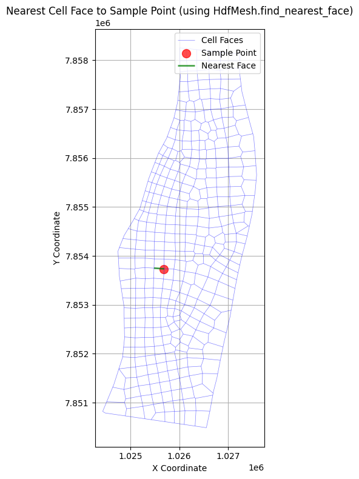
# Example: Extract mesh cell faces and plot with profile lines
print("\nExample: Extracting mesh cell faces and plotting with profile lines")
# Get mesh cell faces
mesh_cell_faces = HdfMesh.get_mesh_cell_faces(geom_hdf_path)
# Display the first few rows of the mesh cell faces DataFrame
print("First few rows of mesh cell faces:")
mesh_cell_faces
# Load the GeoJSON file for profile lines
geojson_path = Path(r'data/profile_lines_chippewa2D.geojson') # Update with the correct path
profile_lines_gdf = gpd.read_file(geojson_path)
# Set the Coordinate Reference System (CRS) to EPSG:5070
profile_lines_gdf = profile_lines_gdf.set_crs(epsg=5070, allow_override=True)
# Plot the mesh cell faces and profile lines together
fig, ax = plt.subplots(figsize=(12, 8))
mesh_cell_faces.plot(ax=ax, color='blue', alpha=0.5, edgecolor='k', label='Mesh Cell Faces')
profile_lines_gdf.plot(ax=ax, color='orange', linewidth=2, label='Profile Lines')
# Set labels and title
ax.set_xlabel('Easting')
ax.set_ylabel('Northing')
ax.set_title('Mesh Cell Faces and Profile Lines')
# Add grid and legend
ax.grid(True)
ax.legend()
# Adjust layout and display
plt.tight_layout()
plt.show()
2026-05-24 05:52:49 - ras_commander.hdf.HdfBase - CRITICAL - No valid projection found. Checked:
1. HDF file projection attribute: C:\GH\symphony-workspaces\ras-commander\CLB-852\examples\example_projects\Chippewa_2D_13\Chippewa_2D.g01.hdf
2. RASMapper projection file C:\GH\symphony-workspaces\ras-commander\CLB-852\examples\example_projects\Chippewa_2D_13\.Winona_Upload\LifeSim model\Winona Levee SQRA 2019\RAS\AW\MMC_Projection.prj found in RASMapper file, but was invalid
To fix this:
1. Open RASMapper
2. Click Map > Set Projection
3. Select an appropriate projection file or coordinate system
4. Save the RASMapper project
Example: Extracting mesh cell faces and plotting with profile lines
First few rows of mesh cell faces:
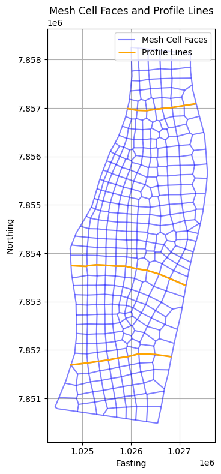
# Example: Extracting mesh cell faces near profile lines using library API
# HdfMesh.get_faces_along_profile_line() replaces ~100 lines of custom helper functions
print("\nExample: Extracting mesh cell faces near profile lines")
# Get mesh cell faces using HdfMesh class
mesh_cell_faces = HdfMesh.get_mesh_cell_faces(geom_hdf_path)
print(f"Loaded {len(mesh_cell_faces)} mesh cell faces")
# Load the GeoJSON file for profile lines
geojson_path = Path(r'data/profile_lines_chippewa2D.geojson')
profile_lines_gdf = gpd.read_file(geojson_path)
profile_lines_gdf = profile_lines_gdf.set_crs(epsg=5070, allow_override=True)
print(f"Loaded {len(profile_lines_gdf)} profile lines")
# Initialize dictionary to store faces near each profile line
faces_near_profile_lines = {}
# Define thresholds
distance_threshold = 10 # Maximum distance from profile line (units depend on CRS)
angle_threshold = 60 # Maximum angle deviation from perpendicular (degrees)
# Use library API to find faces along each profile line
# This replaces the custom calculate_angle, break_line_into_segments,
# angle_difference, order_faces_along_profile functions
for idx, row in profile_lines_gdf.iterrows():
profile_name = row.get('Name', f'Profile_{idx}')
profile_line = row.geometry
# Library call - handles segment breaking, angle calculation, distance filtering, ordering
profile_faces = HdfMesh.get_faces_along_profile_line(
profile_line=profile_line,
cell_faces_gdf=mesh_cell_faces,
distance_threshold=distance_threshold,
angle_threshold=angle_threshold,
order_by_distance=True # Returns faces ordered along profile
)
faces_near_profile_lines[profile_name] = profile_faces
print(f"{profile_name}: Found {len(profile_faces)} perpendicular faces")
print(f"\nTotal profile lines processed: {len(faces_near_profile_lines)}")
# Optional: Combine selected faces into continuous linestrings
profile_to_faceline = gpd.GeoDataFrame(columns=['profile_name', 'geometry'], crs=profile_lines_gdf.crs)
for profile_name, faces in faces_near_profile_lines.items():
if not faces.empty:
# Use library function to combine faces into linestring
combined_line = HdfMesh.combine_faces_to_linestring(
faces,
order_column='distance_along_profile'
)
if combined_line is not None:
new_row = gpd.GeoDataFrame({
'profile_name': [profile_name],
'geometry': [combined_line]
}, crs=profile_lines_gdf.crs)
profile_to_faceline = pd.concat([profile_to_faceline, new_row], ignore_index=True)
# Plot the results
fig, ax = plt.subplots(figsize=(12, 8))
# Plot all mesh cell faces in light blue
mesh_cell_faces.plot(ax=ax, color='lightblue', alpha=0.3, edgecolor='k', label='All Mesh Faces')
# Plot selected faces for each profile line with numbers
colors = ['red', 'green', 'blue', 'orange', 'purple']
for (profile_name, faces), color in zip(faces_near_profile_lines.items(), colors):
if not faces.empty:
faces.plot(ax=ax, color=color, alpha=0.6, label=f'Faces near {profile_name}')
# Add numbers to faces (using distance_along_profile for ordering)
for i, (idx, face) in enumerate(faces.iterrows()):
midpoint = face.geometry.interpolate(0.5, normalized=True)
ax.text(midpoint.x, midpoint.y, str(i+1),
color=color, fontweight='bold', ha='center', va='center')
# Plot the combined linestrings
if not profile_to_faceline.empty:
profile_to_faceline.plot(ax=ax, color='black', linewidth=2,
linestyle='--', label='Combined Face Lines')
# Set labels and title
ax.set_xlabel('Easting')
ax.set_ylabel('Northing')
ax.set_title('Mesh Cell Faces and Profile Lines (using HdfMesh API)\nNumbered in order along profile')
ax.grid(True)
ax.legend()
plt.tight_layout()
plt.show()
# Display the results
print("\nFaces near profile lines:")
for name, faces in faces_near_profile_lines.items():
print(f" {name}: {len(faces)} faces")
if not faces.empty and 'distance_along_profile' in faces.columns:
print(f" Distance range: {faces['distance_along_profile'].min():.1f} to {faces['distance_along_profile'].max():.1f}")
2026-05-24 05:52:50 - ras_commander.hdf.HdfBase - CRITICAL - No valid projection found. Checked:
1. HDF file projection attribute: C:\GH\symphony-workspaces\ras-commander\CLB-852\examples\example_projects\Chippewa_2D_13\Chippewa_2D.g01.hdf
2. RASMapper projection file C:\GH\symphony-workspaces\ras-commander\CLB-852\examples\example_projects\Chippewa_2D_13\.Winona_Upload\LifeSim model\Winona Levee SQRA 2019\RAS\AW\MMC_Projection.prj found in RASMapper file, but was invalid
To fix this:
1. Open RASMapper
2. Click Map > Set Projection
3. Select an appropriate projection file or coordinate system
4. Save the RASMapper project
Example: Extracting mesh cell faces near profile lines
Loaded 814 mesh cell faces
Loaded 3 profile lines
2026-05-24 05:52:50 - ras_commander.hdf.HdfMesh - INFO - Found 16 faces along profile line
Profile Line 1: Found 16 perpendicular faces
2026-05-24 05:52:51 - ras_commander.hdf.HdfMesh - INFO - Found 25 faces along profile line
Profile Line 2: Found 25 perpendicular faces
2026-05-24 05:52:52 - ras_commander.hdf.HdfMesh - INFO - Found 19 faces along profile line
Profile Line 3: Found 19 perpendicular faces
Total profile lines processed: 3
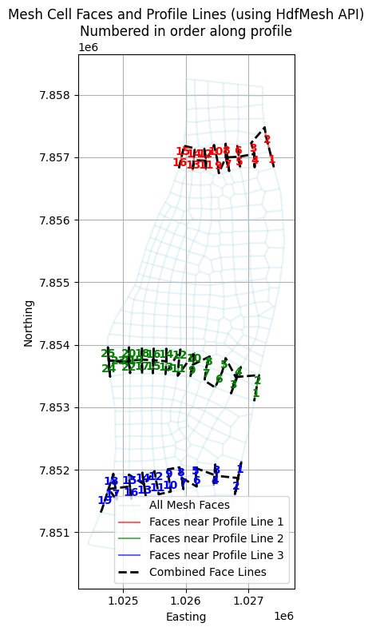
Faces near profile lines:
Profile Line 1: 16 faces
Distance range: 0.0 to 1436.8
Profile Line 2: 25 faces
Distance range: 0.0 to 2448.1
Profile Line 3: 19 faces
Distance range: 0.0 to 2114.2
# Get face property tables with error handling
face_property_tables = HdfMesh.get_mesh_face_property_tables(geom_hdf_path)
face_property_tables
{'Perimeter 1': Face ID Elevation Area Wetted Perimeter Manning's n
0 0 683.783142 0.000000 0.000000 0.066800
1 0 683.983154 25.314476 311.063843 0.066800
2 0 684.140930 77.886810 355.364807 0.066002
3 0 684.189270 98.404495 368.926331 0.065757
4 0 684.579102 249.174759 400.563110 0.065312
... ... ... ... ... ...
5183 812 683.024048 1228.016968 475.787079 0.063346
5184 813 683.636292 0.000000 0.000000 0.075398
5185 813 683.836304 13.135144 199.787888 0.075398
5186 813 683.945923 45.552128 391.646118 0.075415
5187 813 683.949463 51.697250 397.835114 0.075416
[5188 rows x 5 columns]}
# Extract the face property table for Face ID 4 and display it
import matplotlib.pyplot as plt
face_id = 4
face_properties = face_property_tables['Perimeter 1'][face_property_tables['Perimeter 1']['Face ID'] == face_id]
# Create subplots arranged horizontally
fig, axs = plt.subplots(1, 3, figsize=(18, 6))
# Plot Elevation vs Area
axs[0].plot(face_properties['Elevation'], face_properties['Area'], marker='o', color='blue', label='Area')
axs[0].set_title(f'Face ID {face_id}: Elevation vs Area')
axs[0].set_xlabel('Elevation')
axs[0].set_ylabel('Area')
axs[0].grid(True)
axs[0].legend()
# Plot Elevation vs Wetted Perimeter
axs[1].plot(face_properties['Elevation'], face_properties['Wetted Perimeter'], marker='o', color='green', label='Wetted Perimeter')
axs[1].set_title(f'Face ID {face_id}: Elevation vs Wetted Perimeter')
axs[1].set_xlabel('Elevation')
axs[1].set_ylabel('Wetted Perimeter')
axs[1].grid(True)
axs[1].legend()
# Plot Elevation vs Manning's n
axs[2].plot(face_properties['Elevation'], face_properties["Manning's n"], marker='o', color='red', label="Manning's n")
axs[2].set_title(f"Face ID {face_id}: Elevation vs Manning's n")
axs[2].set_xlabel('Elevation')
axs[2].set_ylabel("Manning's n")
axs[2].grid(True)
axs[2].legend()
plt.tight_layout()
plt.show()
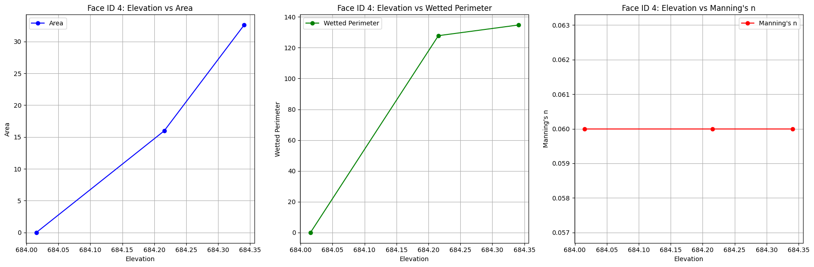
Cell Property Tables¶
Similar to face property tables, cell property tables provide elevation-volume relationships for each mesh cell. This data defines how cell volume changes with water surface elevation and is used internally by HEC-RAS for 2D hydraulic computations.
Note: Cell surface area is stored in a separate dataset (Cells Surface Area), not in the elevation-volume table.
# Get cell property tables for all mesh areas
cell_property_tables = HdfMesh.get_mesh_cell_property_tables(geom_hdf_path)
# Display available mesh areas
if cell_property_tables:
print(f"Mesh areas with cell property tables: {list(cell_property_tables.keys())}")
# Show structure of first mesh area
for mesh_name, df in cell_property_tables.items():
print()
print(f"Mesh: {mesh_name}")
print(f" Shape: {df.shape}")
print(f" Columns: {list(df.columns)}")
print(f" Number of unique cells: {df['Cell ID'].nunique()}")
break
else:
print("No cell property tables found in geometry HDF.")
print("Cell property tables are generated during geometry preprocessing.")
Mesh areas with cell property tables: ['Perimeter 1']
Mesh: Perimeter 1
Shape: (6074, 3)
Columns: ['Cell ID', 'Elevation', 'Volume']
Number of unique cells: 354
# Plot elevation-volume curve for a sample cell
if cell_property_tables:
import matplotlib.pyplot as plt
mesh_name = list(cell_property_tables.keys())[0]
df = cell_property_tables[mesh_name]
# Select a sample cell - use first available cell ID
sample_cell_id = df['Cell ID'].iloc[0]
cell_data = df[df['Cell ID'] == sample_cell_id]
fig, ax = plt.subplots(figsize=(10, 6))
ax.plot(cell_data['Volume'], cell_data['Elevation'], marker='o', linewidth=2, markersize=4)
ax.set_xlabel('Volume (cubic feet)', fontsize=12)
ax.set_ylabel('Elevation (feet)', fontsize=12)
ax.set_title(f'Cell {sample_cell_id} Elevation-Volume Relationship - Mesh: {mesh_name}', fontsize=14)
ax.grid(True, alpha=0.3)
plt.tight_layout()
plt.show()
else:
print("Skipping plot - no cell property tables available.")
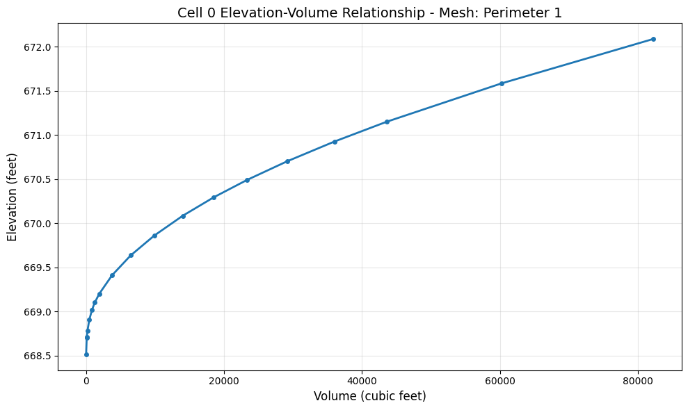
# Get mesh timeseries output
# Get mesh areas from previous code cell
mesh_areas = HdfMesh.get_mesh_area_names(geom_hdf_path)
mesh_name = mesh_areas[0] # Use the first 2D flow area name
timeseries_da = HdfResultsMesh.get_mesh_timeseries(plan_hdf_path, mesh_name, "Water Surface")
Mesh Timeseries Output (Water Surface) for Perimeter 1:
<xarray.DataArray (time: 1633, cell_id: 433)> Size: 3MB
array([[681.284 , 681.25146, 681.22766, ..., 685.05927, 680.1254 ,
683.6363 ],
[681.2948 , 681.2622 , 681.23834, ..., 685.05927, 680.1254 ,
683.6363 ],
[681.30634, 681.2736 , 681.2497 , ..., 685.05927, 680.1254 ,
683.6363 ],
...,
[680.8582 , 680.8306 , 680.8115 , ..., 685.05927, 680.1254 ,
683.7864 ],
[680.852 , 680.82446, 680.8055 , ..., 685.05927, 680.1254 ,
683.7864 ],
[680.8457 , 680.81836, 680.79944, ..., 685.05927, 680.1254 ,
683.7864 ]], shape=(1633, 433), dtype=float32)
Coordinates:
* time (time) datetime64[ns] 13kB 2019-04-02 ... 2019-05-06
* cell_id (cell_id) int64 3kB 0 1 2 3 4 5 6 7 ... 426 427 428 429 430 431 432
Attributes:
units: ft
mesh_name: Perimeter 1
variable: Water Surface# Get mesh cells timeseries output
cells_timeseries_ds = HdfResultsMesh.get_mesh_cells_timeseries(plan_hdf_path, mesh_name)
2026-05-24 05:52:53 - ras_commander.hdf.HdfResultsMesh - WARNING - Variable 'Depth' not found in the HDF file for mesh 'Perimeter 1'. Skipping.
2026-05-24 05:52:53 - ras_commander.hdf.HdfResultsMesh - WARNING - Variable 'Velocity' not found in the HDF file for mesh 'Perimeter 1'. Skipping.
2026-05-24 05:52:53 - ras_commander.hdf.HdfResultsMesh - WARNING - Variable 'Velocity X' not found in the HDF file for mesh 'Perimeter 1'. Skipping.
2026-05-24 05:52:53 - ras_commander.hdf.HdfResultsMesh - WARNING - Variable 'Velocity Y' not found in the HDF file for mesh 'Perimeter 1'. Skipping.
2026-05-24 05:52:53 - ras_commander.hdf.HdfResultsMesh - WARNING - Variable 'Froude Number' not found in the HDF file for mesh 'Perimeter 1'. Skipping.
2026-05-24 05:52:53 - ras_commander.hdf.HdfResultsMesh - WARNING - Variable 'Courant Number' not found in the HDF file for mesh 'Perimeter 1'. Skipping.
2026-05-24 05:52:53 - ras_commander.hdf.HdfResultsMesh - WARNING - Variable 'Shear Stress' not found in the HDF file for mesh 'Perimeter 1'. Skipping.
2026-05-24 05:52:53 - ras_commander.hdf.HdfResultsMesh - WARNING - Variable 'Bed Elevation' not found in the HDF file for mesh 'Perimeter 1'. Skipping.
2026-05-24 05:52:53 - ras_commander.hdf.HdfResultsMesh - WARNING - Variable 'Precipitation Rate' not found in the HDF file for mesh 'Perimeter 1'. Skipping.
2026-05-24 05:52:53 - ras_commander.hdf.HdfResultsMesh - WARNING - Variable 'Infiltration Rate' not found in the HDF file for mesh 'Perimeter 1'. Skipping.
2026-05-24 05:52:53 - ras_commander.hdf.HdfResultsMesh - WARNING - Variable 'Evaporation Rate' not found in the HDF file for mesh 'Perimeter 1'. Skipping.
2026-05-24 05:52:53 - ras_commander.hdf.HdfResultsMesh - WARNING - Variable 'Percolation Rate' not found in the HDF file for mesh 'Perimeter 1'. Skipping.
2026-05-24 05:52:53 - ras_commander.hdf.HdfResultsMesh - WARNING - Variable 'Groundwater Elevation' not found in the HDF file for mesh 'Perimeter 1'. Skipping.
2026-05-24 05:52:53 - ras_commander.hdf.HdfResultsMesh - WARNING - Variable 'Groundwater Depth' not found in the HDF file for mesh 'Perimeter 1'. Skipping.
2026-05-24 05:52:53 - ras_commander.hdf.HdfResultsMesh - WARNING - Variable 'Groundwater Flow' not found in the HDF file for mesh 'Perimeter 1'. Skipping.
2026-05-24 05:52:53 - ras_commander.hdf.HdfResultsMesh - WARNING - Variable 'Groundwater Velocity' not found in the HDF file for mesh 'Perimeter 1'. Skipping.
2026-05-24 05:52:53 - ras_commander.hdf.HdfResultsMesh - WARNING - Variable 'Groundwater Velocity X' not found in the HDF file for mesh 'Perimeter 1'. Skipping.
2026-05-24 05:52:53 - ras_commander.hdf.HdfResultsMesh - WARNING - Variable 'Groundwater Velocity Y' not found in the HDF file for mesh 'Perimeter 1'. Skipping.
2026-05-24 05:52:53 - ras_commander.hdf.HdfResultsMesh - WARNING - Variable 'Face Water Surface' not found in the HDF file for mesh 'Perimeter 1'. Skipping.
2026-05-24 05:52:53 - ras_commander.hdf.HdfResultsMesh - WARNING - Variable 'Face Area' not found in the HDF file for mesh 'Perimeter 1'. Skipping.
2026-05-24 05:52:53 - ras_commander.hdf.HdfResultsMesh - WARNING - Variable 'Face Manning's n' not found in the HDF file for mesh 'Perimeter 1'. Skipping.
2026-05-24 05:52:53 - ras_commander.hdf.HdfResultsMesh - WARNING - Variable 'Face Courant' not found in the HDF file for mesh 'Perimeter 1'. Skipping.
2026-05-24 05:52:53 - ras_commander.hdf.HdfResultsMesh - WARNING - Variable 'Face Cumulative Volume' not found in the HDF file for mesh 'Perimeter 1'. Skipping.
2026-05-24 05:52:53 - ras_commander.hdf.HdfResultsMesh - WARNING - Variable 'Face Eddy Viscosity' not found in the HDF file for mesh 'Perimeter 1'. Skipping.
2026-05-24 05:52:53 - ras_commander.hdf.HdfResultsMesh - WARNING - Variable 'Face Flow Period Average' not found in the HDF file for mesh 'Perimeter 1'. Skipping.
2026-05-24 05:52:53 - ras_commander.hdf.HdfResultsMesh - WARNING - Variable 'Face Friction Term' not found in the HDF file for mesh 'Perimeter 1'. Skipping.
2026-05-24 05:52:53 - ras_commander.hdf.HdfResultsMesh - WARNING - Variable 'Face Pressure Gradient Term' not found in the HDF file for mesh 'Perimeter 1'. Skipping.
2026-05-24 05:52:53 - ras_commander.hdf.HdfResultsMesh - WARNING - Variable 'Face Shear Stress' not found in the HDF file for mesh 'Perimeter 1'. Skipping.
2026-05-24 05:52:53 - ras_commander.hdf.HdfResultsMesh - WARNING - Variable 'Face Tangential Velocity' not found in the HDF file for mesh 'Perimeter 1'. Skipping.
Mesh Cells Timeseries Output:
{'Perimeter 1': <xarray.Dataset> Size: 13MB
Dimensions: (time: 1633, cell_id: 433, face_id: 814)
Coordinates:
* time (time) datetime64[us] 13kB 2019-04-02 ... 2019-05-06
* cell_id (cell_id) int64 3kB 0 1 2 3 4 5 6 ... 427 428 429 430 431 432
* face_id (face_id) int64 7kB 0 1 2 3 4 5 6 ... 808 809 810 811 812 813
Data variables:
Water Surface (time, cell_id) float32 3MB 681.3 681.3 681.2 ... 680.1 683.8
Face Flow (time, face_id) float32 5MB 0.0 0.0 0.0 0.0 ... 0.0 0.0 0.0
Face Velocity (time, face_id) float32 5MB 0.0 0.0 0.0 0.0 ... 0.0 0.0 -0.0
Attributes:
mesh_name: Perimeter 1
start_time: 2019-04-02 00:00:00}
# Get mesh faces timeseries output
faces_timeseries_ds = HdfResultsMesh.get_mesh_faces_timeseries(plan_hdf_path, mesh_name)
Mesh Faces Timeseries Output:
<xarray.Dataset> Size: 11MB
Dimensions: (time: 1633, face_id: 814)
Coordinates:
* time (time) datetime64[ns] 13kB 2019-04-02 ... 2019-05-06
* face_id (face_id) int64 7kB 0 1 2 3 4 5 6 ... 808 809 810 811 812 813
Data variables:
face_flow (time, face_id) float32 5MB 0.0 0.0 0.0 0.0 ... 0.0 0.0 0.0
face_velocity (time, face_id) float32 5MB 0.0 0.0 0.0 0.0 ... 0.0 0.0 -0.0
Attributes:
units: cfs
mesh_name: Perimeter 1
variable: Face FlowPositive Flow Direction Normalization¶
The following helper is used only for a demonstration-style aggregation workflow. This is a notebook-specific helper - not part of the library API or a native HEC-RAS reference-line implementation.
Limitation: Converting face flow and face velocity to positive values assumes the selected faces all represent the same net flow direction. That assumption can break down in recirculation, reverse-flow, or mixed-direction zones and may overstate through-flow.
Use this only when you have independently confirmed that the transect is behaving as a one-way flow section for the timesteps of interest.
Future Library Candidate: HdfResultsMesh.normalize_face_flow_direction()
# Convert all face velocities and face flow values to positive for further calculations
# We have visually confirmed for this model that all flow is moving in the same direction
# Function to process and convert face data to positive values
def convert_to_positive_values(faces_timeseries_ds, cells_timeseries_ds):
"""
Convert face velocities and flows to positive values while maintaining their relationships.
Args:
faces_timeseries_ds (xarray.Dataset): Dataset containing face timeseries data
cells_timeseries_ds (xarray.Dataset): Dataset containing cell timeseries data
Returns:
xarray.Dataset: Modified dataset with positive values
"""
# Get the face velocity variable (always available)
face_velocity = faces_timeseries_ds['face_velocity']
# Calculate the sign of the velocity to maintain flow direction relationships
velocity_sign = xr.where(face_velocity >= 0, 1, -1)
# Convert velocities to absolute values
faces_timeseries_ds['face_velocity'] = abs(face_velocity)
# Check if face_flow exists and process it if available
if 'face_flow' in faces_timeseries_ds:
face_flow = faces_timeseries_ds['face_flow']
faces_timeseries_ds['face_flow'] = abs(face_flow)
print("Face flow data processed.")
else:
print("Note: face_flow not available in this dataset (depends on HEC-RAS output settings)")
# Store the original sign as a new variable for reference
faces_timeseries_ds['velocity_direction'] = velocity_sign
print("Conversion to positive values complete.")
print(f"Number of faces processed: {len(faces_timeseries_ds.face_id)}")
print(f"Available variables: {list(faces_timeseries_ds.data_vars)}")
return faces_timeseries_ds, cells_timeseries_ds
# Convert the values in our datasets
faces_timeseries_ds_positive, cells_timeseries_ds_positive = convert_to_positive_values(
faces_timeseries_ds,
cells_timeseries_ds
)
Face flow data processed.
Conversion to positive values complete.
Number of faces processed: 814
Available variables: ['face_flow', 'face_velocity', 'velocity_direction']
import pandas as pd
import numpy as np
import xarray as xr
# Function to process faces for a single profile line
def process_profile_line(profile_name, faces, cells_timeseries_ds, faces_timeseries_ds):
face_ids = faces['face_id'].tolist()
# Extract relevant data for these faces
face_velocities = faces_timeseries_ds['face_velocity'].sel(face_id=face_ids)
# Build dataset with available data
data_vars = {'face_velocity': face_velocities}
# Check if face_flow exists and add it if available
if 'face_flow' in faces_timeseries_ds:
face_flows = faces_timeseries_ds['face_flow'].sel(face_id=face_ids)
data_vars['face_flow'] = face_flows
# Create a new dataset with calculated results
results_ds = xr.Dataset(data_vars)
# Convert to dataframe for easier manipulation
results_df = results_ds.to_dataframe().reset_index()
# Add profile name and face order
results_df['profile_name'] = profile_name
results_df['face_order'] = results_df.groupby('time')['face_id'].transform(lambda x: pd.factorize(x)[0])
return results_df
Calculate a discharge-weighted average velocity for each profile line:
Vw = Sum(|Qi| * |Vi|) / Sum(|Qi|)
This first-pass diagnostic does not compute an area-based velocity (Sum(Q) / Sum(A)) or a
native HEC-RAS reference-line conveyance-weighted quantity. The later native reference-line
comparison section demonstrates a short-form version of those calculations by interpolating
stage-specific face hydraulic properties along the native internal-face chain.
Then, save the results to CSV
# Process all profile lines
all_results = []
for profile_name, faces in faces_near_profile_lines.items():
profile_results = process_profile_line(profile_name, faces, cells_timeseries_ds, faces_timeseries_ds)
all_results.append(profile_results)
# Combine results from all profile lines
combined_results_df = pd.concat(all_results, ignore_index=True)
# Display the first few rows of the combined results
combined_results_df.head()
| time | face_id | face_velocity | face_flow | profile_name | face_order | |
|---|---|---|---|---|---|---|
| 0 | 2019-04-02 | 203 | 0.0 | 0.0 | Profile Line 1 | 0 |
| 1 | 2019-04-02 | 53 | 0.0 | 0.0 | Profile Line 1 | 1 |
| 2 | 2019-04-02 | 51 | 0.0 | 0.0 | Profile Line 1 | 2 |
| 3 | 2019-04-02 | 97 | 0.0 | 0.0 | Profile Line 1 | 3 |
| 4 | 2019-04-02 | 95 | 0.0 | 0.0 | Profile Line 1 | 4 |
profile_time_series = {}
# Iterate through each profile line and extract its corresponding data
for profile_name, faces_gdf in faces_near_profile_lines.items():
# Get the list of face_ids for this profile line
face_ids = faces_gdf['face_id'].tolist()
# Filter the combined_results_df for these face_ids
profile_df = combined_results_df[combined_results_df['face_id'].isin(face_ids)].copy()
# Add the profile name as a column
profile_df['profile_name'] = profile_name
# Reset index for cleanliness
profile_df.reset_index(drop=True, inplace=True)
# Store in the dictionary
profile_time_series[profile_name] = profile_df
# Display a preview
print(f"\nTime Series DataFrame for {profile_name}:")
profile_df
# Optionally, display all profile names
print("\nProfile Lines Processed:")
profile_time_series
Time Series DataFrame for Profile Line 1:
Time Series DataFrame for Profile Line 2:
Time Series DataFrame for Profile Line 3:
Profile Lines Processed:
{'Profile Line 1': time face_id face_velocity face_flow profile_name \
0 2019-04-02 203 0.000000 0.000000 Profile Line 1
1 2019-04-02 53 0.000000 0.000000 Profile Line 1
2 2019-04-02 51 0.000000 0.000000 Profile Line 1
3 2019-04-02 97 0.000000 0.000000 Profile Line 1
4 2019-04-02 95 0.000000 0.000000 Profile Line 1
... ... ... ... ... ...
26123 2019-05-06 111 0.880902 1702.129395 Profile Line 1
26124 2019-05-06 80 0.786477 1724.444092 Profile Line 1
26125 2019-05-06 698 0.111120 246.978256 Profile Line 1
26126 2019-05-06 700 0.000000 0.000000 Profile Line 1
26127 2019-05-06 804 0.000000 0.000000 Profile Line 1
face_order
0 0
1 1
2 2
3 3
4 4
... ...
26123 11
26124 12
26125 13
26126 14
26127 15
[26128 rows x 6 columns],
'Profile Line 2': time face_id face_velocity face_flow profile_name \
0 2019-04-02 465 0.000000 0.000000 Profile Line 2
1 2019-04-02 388 0.000000 0.000000 Profile Line 2
2 2019-04-02 463 0.000000 0.000000 Profile Line 2
3 2019-04-02 386 0.000000 0.000000 Profile Line 2
4 2019-04-02 475 0.000000 0.000000 Profile Line 2
... ... ... ... ... ...
40820 2019-05-06 282 0.004232 0.000023 Profile Line 2
40821 2019-05-06 285 0.000000 0.000000 Profile Line 2
40822 2019-05-06 281 0.000146 0.001186 Profile Line 2
40823 2019-05-06 286 0.000000 0.000000 Profile Line 2
40824 2019-05-06 284 0.000000 0.000000 Profile Line 2
face_order
0 0
1 1
2 2
3 3
4 4
... ...
40820 20
40821 21
40822 22
40823 23
40824 24
[40825 rows x 6 columns],
'Profile Line 3': time face_id face_velocity face_flow profile_name \
0 2019-04-02 533 0.000000 0.000000 Profile Line 3
1 2019-04-02 642 0.000000 0.000000 Profile Line 3
2 2019-04-02 345 0.000000 0.000000 Profile Line 3
3 2019-04-02 344 0.000000 0.000000 Profile Line 3
4 2019-04-02 348 0.000000 0.000000 Profile Line 3
... ... ... ... ... ...
31022 2019-05-06 436 0.011705 0.000237 Profile Line 3
31023 2019-05-06 516 0.003289 0.000003 Profile Line 3
31024 2019-05-06 517 0.013613 0.005462 Profile Line 3
31025 2019-05-06 479 0.000000 0.000000 Profile Line 3
31026 2019-05-06 730 0.000000 0.000000 Profile Line 3
face_order
0 0
1 1
2 2
3 3
4 4
... ...
31022 14
31023 15
31024 16
31025 17
31026 18
[31027 rows x 6 columns]}
all_profiles_df = pd.concat(profile_time_series.values(), ignore_index=True)
# Display the combined dataframe
print("Combined Time Series DataFrame for All Profiles:")
all_profiles_df
Combined Time Series DataFrame for All Profiles:
| time | face_id | face_velocity | face_flow | profile_name | face_order | |
|---|---|---|---|---|---|---|
| 0 | 2019-04-02 | 203 | 0.000000 | 0.000000 | Profile Line 1 | 0 |
| 1 | 2019-04-02 | 53 | 0.000000 | 0.000000 | Profile Line 1 | 1 |
| 2 | 2019-04-02 | 51 | 0.000000 | 0.000000 | Profile Line 1 | 2 |
| 3 | 2019-04-02 | 97 | 0.000000 | 0.000000 | Profile Line 1 | 3 |
| 4 | 2019-04-02 | 95 | 0.000000 | 0.000000 | Profile Line 1 | 4 |
| ... | ... | ... | ... | ... | ... | ... |
| 97975 | 2019-05-06 | 436 | 0.011705 | 0.000237 | Profile Line 3 | 14 |
| 97976 | 2019-05-06 | 516 | 0.003289 | 0.000003 | Profile Line 3 | 15 |
| 97977 | 2019-05-06 | 517 | 0.013613 | 0.005462 | Profile Line 3 | 16 |
| 97978 | 2019-05-06 | 479 | 0.000000 | 0.000000 | Profile Line 3 | 17 |
| 97979 | 2019-05-06 | 730 | 0.000000 | 0.000000 | Profile Line 3 | 18 |
97980 rows × 6 columns
# Check if we have the necessary variables
print("Available variables:")
print("profile_time_series:", 'profile_time_series' in locals())
print("faces_near_profile_lines:", 'faces_near_profile_lines' in locals())
print("profile_averages:", 'profile_averages' in locals())
# Look at the structure of profile_time_series
if 'profile_time_series' in locals():
for name, df in profile_time_series.items():
print(f"\nColumns in {name}:")
print(df.columns.tolist())
Available variables:
profile_time_series: True
faces_near_profile_lines: True
profile_averages: False
Columns in Profile Line 1:
['time', 'face_id', 'face_velocity', 'face_flow', 'profile_name', 'face_order']
Columns in Profile Line 2:
['time', 'face_id', 'face_velocity', 'face_flow', 'profile_name', 'face_order']
Columns in Profile Line 3:
['time', 'face_id', 'face_velocity', 'face_flow', 'profile_name', 'face_order']
Discharge-Weighted Velocity Calculation¶
The following function calculates discharge-weighted average velocity: Vw = Sum(|Qi| * |Vi|) / Sum(|Qi|)
This is a notebook-specific helper demonstrating a bulk face-based velocity metric. It is not a native HEC-RAS reference-line result. Simple averaging (V_avg = Sum(Vi)/N) can significantly underestimate or overestimate representative velocity when face flows vary substantially.
Why Discharge-Weighting Matters: - Faces with higher flow contribute more to the representative velocity - Simple averaging treats a trickle and a torrent equally - Discharge-weighted averaging better represents bulk flow behavior
Future Library Candidates:
- HdfResultsMesh.aggregate_faces_along_profile(..., weight='Face Flow')
- HdfMesh.compute_profile_face_signs(profile_line, faces_gdf)
- HdfMesh.get_mesh_face_conveyance_tables() or an equivalent derived-table helper
def calculate_discharge_weighted_velocity(profile_df: pd.DataFrame) -> pd.DataFrame:
"""
Calculate discharge-weighted average velocity for a profile line.
Vw = Sum(|Qi|*|Vi|)/Sum(|Qi|) where Qi is face flow and Vi is face velocity.
If face_flow is not available, falls back to simple average velocity.
"""
print("Calculating weighted velocity...")
print(f"Input DataFrame columns: {list(profile_df.columns)}")
has_face_flow = 'face_flow' in profile_df.columns
if not has_face_flow:
print("Note: face_flow not available, using simple average velocity instead")
# Calculate weighted velocity for each timestep
weighted_velocities = []
for time in profile_df['time'].unique():
time_data = profile_df[profile_df['time'] == time]
abs_velocities = np.abs(time_data['face_velocity'])
if has_face_flow:
# Discharge-weighted velocity
abs_flows = np.abs(time_data['face_flow'])
if abs_flows.sum() > 0:
weighted_vel = (abs_flows * abs_velocities).sum() / abs_flows.sum()
else:
weighted_vel = abs_velocities.mean()
else:
# Simple average velocity
weighted_vel = abs_velocities.mean()
weighted_velocities.append({
'time': time,
'weighted_velocity': weighted_vel
})
weighted_df = pd.DataFrame(weighted_velocities)
print(f"Calculated velocities:\n{weighted_df.head()}")
return weighted_df
# Calculate for each profile line
for profile_name, profile_df in profile_time_series.items():
print(f"\nProcessing profile: {profile_name}")
# Calculate discharge-weighted velocity
weighted_velocities = calculate_discharge_weighted_velocity(profile_df)
print("Weighted velocities calculated.")
# Get ordered faces for this profile
ordered_faces = faces_near_profile_lines[profile_name]
print(f"Number of ordered faces: {len(ordered_faces)}")
print("Converted time to datetime format.")
# Get ordered faces for this profile
ordered_faces = faces_near_profile_lines[profile_name]
print(f"Number of ordered faces: {len(ordered_faces)}")
# Save dataframes in the output directory
output_file = ras.project_folder / f"{profile_name}_discharge_weighted_velocity.csv"
weighted_velocities.to_csv(output_file, index=False)
print(f"Saved weighted velocities to {output_file}")
Processing profile: Profile Line 1
Calculating weighted velocity...
Input DataFrame columns: ['time', 'face_id', 'face_velocity', 'face_flow', 'profile_name', 'face_order']
Calculated velocities:
time weighted_velocity
0 2019-04-02 00:00:00 1.135018
1 2019-04-02 00:30:00 1.136751
2 2019-04-02 01:00:00 1.139270
3 2019-04-02 01:30:00 1.141567
4 2019-04-02 02:00:00 1.143858
Weighted velocities calculated.
Number of ordered faces: 16
Converted time to datetime format.
Number of ordered faces: 16
Saved weighted velocities to C:\GH\symphony-workspaces\ras-commander\CLB-852\examples\example_projects\Chippewa_2D_13\Profile Line 1_discharge_weighted_velocity.csv
Processing profile: Profile Line 2
Calculating weighted velocity...
Input DataFrame columns: ['time', 'face_id', 'face_velocity', 'face_flow', 'profile_name', 'face_order']
Calculated velocities:
time weighted_velocity
0 2019-04-02 00:00:00 0.830894
1 2019-04-02 00:30:00 0.831717
2 2019-04-02 01:00:00 0.833358
3 2019-04-02 01:30:00 0.834912
4 2019-04-02 02:00:00 0.836489
Weighted velocities calculated.
Number of ordered faces: 25
Converted time to datetime format.
Number of ordered faces: 25
Saved weighted velocities to C:\GH\symphony-workspaces\ras-commander\CLB-852\examples\example_projects\Chippewa_2D_13\Profile Line 2_discharge_weighted_velocity.csv
Processing profile: Profile Line 3
Calculating weighted velocity...
Input DataFrame columns: ['time', 'face_id', 'face_velocity', 'face_flow', 'profile_name', 'face_order']
Calculated velocities:
time weighted_velocity
0 2019-04-02 00:00:00 0.201104
1 2019-04-02 00:30:00 0.201087
2 2019-04-02 01:00:00 0.201382
3 2019-04-02 01:30:00 0.201664
4 2019-04-02 02:00:00 0.201955
Weighted velocities calculated.
Number of ordered faces: 19
Converted time to datetime format.
Number of ordered faces: 19
Saved weighted velocities to C:\GH\symphony-workspaces\ras-commander\CLB-852\examples\example_projects\Chippewa_2D_13\Profile Line 3_discharge_weighted_velocity.csv
# Create plots comparing discharge-weighted velocity and simple average for each profile line
for profile_name, profile_df in profile_time_series.items():
print(f"\nGenerating comparison plot for profile: {profile_name}")
# Calculate discharge-weighted velocity
weighted_velocities = calculate_discharge_weighted_velocity(profile_df)
weighted_velocities['time'] = pd.to_datetime(weighted_velocities['time'])
# Calculate simple average velocity for each timestep
simple_averages = profile_df.groupby('time')['face_velocity'].mean().reset_index()
simple_averages['time'] = pd.to_datetime(simple_averages['time'])
# Create figure for comparison plot
plt.figure(figsize=(16, 9))
# Plot individual face velocities with thin lines
for face_id in profile_df['face_id'].unique():
face_data = profile_df[profile_df['face_id'] == face_id]
plt.plot(face_data['time'],
face_data['face_velocity'],
alpha=0.8, # More transparent
linewidth=0.3, # Thinner line
color='gray', # Consistent color
label=f'Face ID {face_id}')
# Find and annotate peak value for each face
peak_idx = face_data['face_velocity'].idxmax()
peak_time = face_data.loc[peak_idx, 'time']
peak_vel = face_data.loc[peak_idx, 'face_velocity']
plt.annotate(f'{peak_vel:.2f} ({face_id})',
xy=(peak_time, peak_vel),
xytext=(10, 10),
textcoords='offset points',
fontsize=8,
alpha=0.5)
# Plot discharge-weighted velocity
plt.plot(weighted_velocities['time'],
weighted_velocities['weighted_velocity'],
color='red',
alpha=1.0,
linewidth=2,
label='Discharge-Weighted Velocity')
# Find and annotate peak weighted velocity
peak_idx = weighted_velocities['weighted_velocity'].idxmax()
peak_time = weighted_velocities.loc[peak_idx, 'time']
peak_vel = weighted_velocities.loc[peak_idx, 'weighted_velocity']
plt.annotate(f'Peak Weighted: {peak_vel:.2f}',
xy=(peak_time, peak_vel),
xytext=(10, 10),
textcoords='offset points',
color='red',
fontweight='bold')
# Plot simple average
plt.plot(simple_averages['time'],
simple_averages['face_velocity'],
color='blue',
alpha=0.5,
linewidth=1,
linestyle='--',
label='Simple Average')
# Find and annotate peak simple average
peak_idx = simple_averages['face_velocity'].idxmax()
peak_time = simple_averages.loc[peak_idx, 'time']
peak_vel = simple_averages.loc[peak_idx, 'face_velocity']
plt.annotate(f'Peak Average: {peak_vel:.2f}',
xy=(peak_time, peak_vel),
xytext=(10, -10),
textcoords='offset points',
color='blue',
fontweight='bold')
# Configure plot
plt.title(f'Velocity Comparison for {profile_name} \nIndividual Face Velocities vs Simple Average Velocity vs Discharge-Weighted Average Velocity')
plt.xlabel('Time')
plt.ylabel('Velocity (ft/s)')
plt.grid(True, alpha=0.3)
# Add legend with better placement
plt.legend(bbox_to_anchor=(1.05, 1), loc='upper left')
# Adjust layout to accommodate legend and stats
plt.subplots_adjust(right=0.8)
# Save plot to file
plot_file = ras.project_folder / f"{profile_name}_velocity_comparison.png"
plt.savefig(plot_file, bbox_inches='tight', dpi=300)
plt.show()
# Print detailed comparison
print(f"\nVelocity Comparison for {profile_name} \nIndividual Face Velocities vs Simple Average Velocity vs Discharge-Weighted Average Velocity")
print(f"Number of faces: {profile_df['face_id'].nunique()}")
print("\nDischarge-Weighted Velocity Statistics:")
print(f"Mean: {weighted_velocities['weighted_velocity'].mean():.2f} ft/s")
print(f"Max: {weighted_velocities['weighted_velocity'].max():.2f} ft/s")
print(f"Min: {weighted_velocities['weighted_velocity'].min():.2f} ft/s")
print("\nSimple Average Velocity Statistics:")
print(f"Mean: {simple_averages['face_velocity'].mean():.2f} ft/s")
print(f"Max: {simple_averages['face_velocity'].max():.2f} ft/s")
print(f"Min: {simple_averages['face_velocity'].min():.2f} ft/s")
Generating comparison plot for profile: Profile Line 1
Calculating weighted velocity...
Input DataFrame columns: ['time', 'face_id', 'face_velocity', 'face_flow', 'profile_name', 'face_order']
Calculated velocities:
time weighted_velocity
0 2019-04-02 00:00:00 1.135018
1 2019-04-02 00:30:00 1.136751
2 2019-04-02 01:00:00 1.139270
3 2019-04-02 01:30:00 1.141567
4 2019-04-02 02:00:00 1.143858
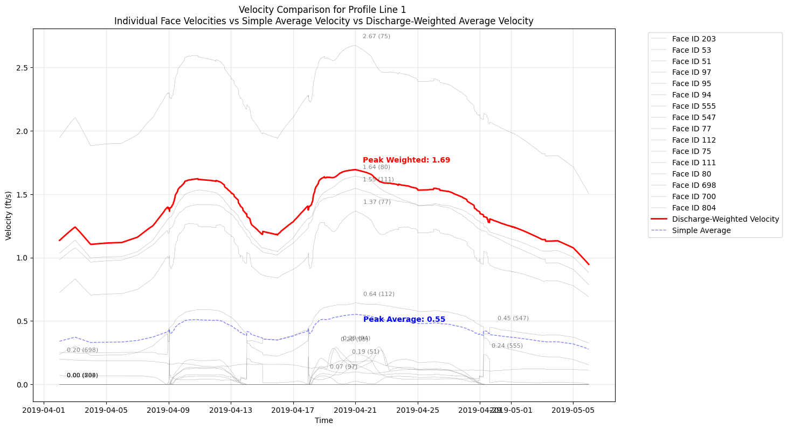
Velocity Comparison for Profile Line 1
Individual Face Velocities vs Simple Average Velocity vs Discharge-Weighted Average Velocity
Number of faces: 16
Discharge-Weighted Velocity Statistics:
Mean: 1.37 ft/s
Max: 1.69 ft/s
Min: 0.95 ft/s
Simple Average Velocity Statistics:
Mean: 0.42 ft/s
Max: 0.55 ft/s
Min: 0.28 ft/s
Generating comparison plot for profile: Profile Line 2
Calculating weighted velocity...
Input DataFrame columns: ['time', 'face_id', 'face_velocity', 'face_flow', 'profile_name', 'face_order']
Calculated velocities:
time weighted_velocity
0 2019-04-02 00:00:00 0.830894
1 2019-04-02 00:30:00 0.831717
2 2019-04-02 01:00:00 0.833358
3 2019-04-02 01:30:00 0.834912
4 2019-04-02 02:00:00 0.836489
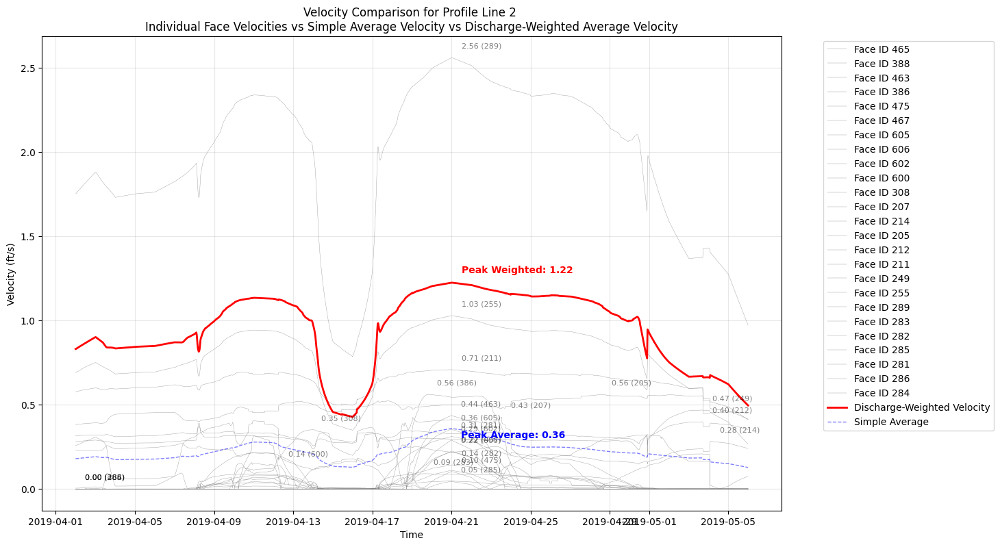
Velocity Comparison for Profile Line 2
Individual Face Velocities vs Simple Average Velocity vs Discharge-Weighted Average Velocity
Number of faces: 25
Discharge-Weighted Velocity Statistics:
Mean: 0.95 ft/s
Max: 1.22 ft/s
Min: 0.43 ft/s
Simple Average Velocity Statistics:
Mean: 0.22 ft/s
Max: 0.36 ft/s
Min: 0.13 ft/s
Generating comparison plot for profile: Profile Line 3
Calculating weighted velocity...
Input DataFrame columns: ['time', 'face_id', 'face_velocity', 'face_flow', 'profile_name', 'face_order']
Calculated velocities:
time weighted_velocity
0 2019-04-02 00:00:00 0.201104
1 2019-04-02 00:30:00 0.201087
2 2019-04-02 01:00:00 0.201382
3 2019-04-02 01:30:00 0.201664
4 2019-04-02 02:00:00 0.201955
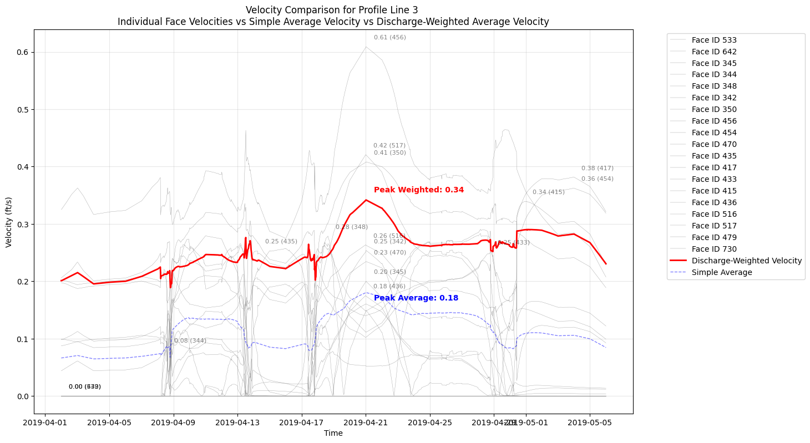
Velocity Comparison for Profile Line 3
Individual Face Velocities vs Simple Average Velocity vs Discharge-Weighted Average Velocity
Number of faces: 19
Discharge-Weighted Velocity Statistics:
Mean: 0.25 ft/s
Max: 0.34 ft/s
Min: 0.19 ft/s
Simple Average Velocity Statistics:
Mean: 0.11 ft/s
Max: 0.18 ft/s
Min: 0.06 ft/s
Important Notes on Face Velocity Interpretation¶
Perpendicularity Requirement:
The face normal velocity from HDF is only accurate when cell faces are perpendicular to flow.
The HdfMesh.get_faces_along_profile_line() function includes an angle_threshold parameter
to filter faces that deviate too far from perpendicular (default: 60 degrees from perpendicular).
Profile Line Orientation: - Draw profile lines across (perpendicular to) the expected flow direction - The library function will select faces that are perpendicular to YOUR profile line - This means selected faces will be roughly parallel to flow
Discharge-Weighted vs Simple Average:
- Simple average: treats all faces equally (can be misleading)
- Discharge-weighted: properly represents bulk flow behavior
- See calculate_discharge_weighted_velocity() in this notebook
For More Robust Analysis: - Consider face area variations - Validate against known rating curves or gauge data - Use multiple profile lines to assess spatial variability
Native Reference Line Comparison¶
The next section adds the same profile lines as native HEC-RAS reference lines, reruns the model
with HEC-RAS 7.0, and compares native reference-line output against a short-form reconstruction
from Geometry/Reference Lines/Internal Faces connectivity.
This section mutates the example project: it requests additional HDF output variables, adds missing native reference lines, clears geometry preprocessing, reruns the selected plan, and writes timestamped comparison CSVs plus _latest aliases. Existing reference lines are reused by name; if the GeoJSON coordinates changed, remove or update those reference lines before rerunning this demonstration.
Short-form assumptions used here:
- Native HEC-RAS reference-line outputs are read dynamically from the plan HDF instead of hard-coding a small variable list.
- Native internal faces and partial-face station fractions are read from the geometry HDF through HdfMesh.get_reference_line_internal_faces().
- Station fractions are clipped to [0, 1] for the short-form demonstration, with any out-of-range values reported as diagnostics.
- Face area, wetted perimeter, Manning's n, hydraulic radius, and conveyance are interpolated from the 2D face property tables through HdfMesh.get_mesh_face_hydraulic_properties_at_stage().
- That HdfMesh helper is sourced from the geometry preprocessor tables. When native face outputs are available in the plan/results HDF, prefer HdfResultsMesh for canonical QAQC because the unsteady solver aggregates from computational time steps to output time steps.
- When native Face Area output is present after rerun, the short-form Q / Area velocity uses native face-output area and keeps property-table-derived area as a diagnostic comparison.
- Conveyance is derived using the Manning conveyance form K = C * A * R^(2/3) / n, with R = A/P and C = 1.486 for US customary units.
- Native reference-line velocity is checked directly against native Flow / Area when the HDF includes reference-line Area.
- Flow is still shown as both signed Face Flow and absolute Face Flow. The absolute-flow view is a diagnostic assumption for this demonstration and can overstate through-flow where the reference line crosses reversals, eddies, or mixed-direction cells.
- Raw signed Face Flow can use the opposite sign convention from the native reference line. For QAQC comparison only, the notebook reports an orientation-normalized signed-flow metric while retaining the raw signed result.
Official HEC-RAS references used: - 2D face hydraulic property tables: https://www.hec.usace.army.mil/confluence/rasdocs/r2dum/latest/development-of-a-2d-or-combined-1d-2d-model/creating-hydraulic-property-tables-for-2d-flow-areas - Conveyance/Manning form: https://www.hec.usace.army.mil/confluence/rasdocs/ras1dtechref/latest/theoretical-basis-for-one-dimensional-and-two-dimensional-hydrodynamic-calculations/1d-steady-flow-water-surface-profiles/cross-section-subdivision-for-conveyance-calculations
This remains a demonstration notebook, not a native reference-line implementation, but it now exposes the specific differences between native reference-line results and the computed face/property-table metrics.
from ras_commander import GeomReferenceFeatures, RasPlan
from ras_commander.hdf import HdfMesh, HdfResultsMesh, HdfResultsXsec
profile_geojson_path = Path(r"data/profile_lines_chippewa2D.geojson")
profile_lines_gdf = gpd.read_file(profile_geojson_path)
profile_lines_gdf = profile_lines_gdf.set_crs(epsg=5070, allow_override=True)
plan_row = ras.plan_df.loc[ras.plan_df['plan_number'] == plan_number].iloc[0]
geom_path = Path(plan_row['Geom Path'])
reference_line_output_variables = [
"Face Flow",
"Face Velocity",
"Face Water Surface",
"Face Area",
"Face Manning's n",
]
for output_variable in reference_line_output_variables:
RasPlan.add_hdf_output_variable(plan_number, output_variable, ras_object=ras)
print(f"Requested 2D face HDF outputs: {reference_line_output_variables}")
existing_reference_line_names = {
item['name'] for item in GeomReferenceFeatures.get_reference_lines(geom_path)
}
reference_lines_to_add = []
reused_reference_line_names = []
for idx, row in profile_lines_gdf.iterrows():
profile_name = row.get('Name', f'Profile_{idx}')
if profile_name in existing_reference_line_names:
reused_reference_line_names.append(profile_name)
continue
reference_lines_to_add.append({
'name': profile_name,
'coordinates': list(row.geometry.coords),
})
if reference_lines_to_add:
added_reference_lines = GeomReferenceFeatures.add_reference_lines(
geom_path,
lines=reference_lines_to_add,
storage_area=mesh_name,
)
print(f"Added {added_reference_lines} reference line(s) to {geom_path.name}")
else:
print("All notebook profile lines already exist as native reference lines.")
if reused_reference_line_names:
print(
"Reusing existing reference line(s) by name without coordinate replacement: "
f"{sorted(reused_reference_line_names)}"
)
print("If GeoJSON coordinates changed, remove/update those reference lines before rerunning this demonstration.")
print(
"This notebook section mutates the example project: it requests HDF outputs, adds missing "
"reference lines, clears geometry preprocessing, and reruns the selected plan."
)
compute_result = RasCmdr.compute_plan(
plan_number,
ras_object=ras,
clear_geompre=True,
force_rerun=True,
num_cores=2,
)
print(compute_result)
plan_hdf_path = Path(ras.project_folder) / f"{ras.project_name}.p{plan_number}.hdf"
geom_hdf_path = Path(str(geom_path) + '.hdf')
native_reference_lines_ds = HdfResultsXsec.get_ref_lines_timeseries(plan_hdf_path)
if not native_reference_lines_ds.data_vars:
raise ValueError("Native reference line results were not written to the plan HDF.")
native_reference_line_variables = sorted(native_reference_lines_ds.data_vars)
required_reference_line_variables = {"Flow", "Velocity", "Water Surface"}
missing_reference_line_variables = required_reference_line_variables - set(native_reference_line_variables)
if missing_reference_line_variables:
raise ValueError(f"Missing required native reference-line variables: {sorted(missing_reference_line_variables)}")
print(f"Native reference line variables: {native_reference_line_variables}")
print(
"Native Water Surface Conveyance output available: "
f"{'Water Surface Conveyance' in native_reference_line_variables}"
)
native_reference_lines_ds
2026-05-24 05:53:02 - ras_commander.RasPlan - INFO - Added HDF output variable 'Face Flow' to plan file: Chippewa_2D.p02
2026-05-24 05:53:02 - ras_commander.RasPlan - INFO - Added HDF output variable 'Face Velocity' to plan file: Chippewa_2D.p02
2026-05-24 05:53:02 - ras_commander.RasPlan - INFO - Added HDF output variable 'Face Water Surface' to plan file: Chippewa_2D.p02
2026-05-24 05:53:02 - ras_commander.RasPlan - INFO - Added HDF output variable 'Face Area' to plan file: Chippewa_2D.p02
2026-05-24 05:53:02 - ras_commander.RasPlan - INFO - Added HDF output variable 'Face Manning's n' to plan file: Chippewa_2D.p02
2026-05-24 05:53:02 - ras_commander.geom.GeomReferenceFeatures - INFO - Created backup: Chippewa_2D.g01.bak
2026-05-24 05:53:02 - ras_commander.RasCmdr - INFO - Using ras_object with project folder: C:\GH\symphony-workspaces\ras-commander\CLB-852\examples\example_projects\Chippewa_2D_13
2026-05-24 05:53:02 - ras_commander.geom.GeomPreprocessor - INFO - Clearing geometry preprocessor file for single plan: C:\GH\symphony-workspaces\ras-commander\CLB-852\examples\example_projects\Chippewa_2D_13\Chippewa_2D.p02
2026-05-24 05:53:02 - ras_commander.geom.GeomPreprocessor - WARNING - No geometry preprocessor file found for: C:\GH\symphony-workspaces\ras-commander\CLB-852\examples\example_projects\Chippewa_2D_13\Chippewa_2D.p02
2026-05-24 05:53:02 - ras_commander.RasCmdr - INFO - Cleared geometry preprocessor files for plan: 02
2026-05-24 05:53:02 - ras_commander.RasUtils - INFO - Successfully updated file: C:\GH\symphony-workspaces\ras-commander\CLB-852\examples\example_projects\Chippewa_2D_13\Chippewa_2D.p02
2026-05-24 05:53:02 - ras_commander.RasCmdr - INFO - Set number of cores to 2 for plan: 02
2026-05-24 05:53:02 - ras_commander.RasCmdr - INFO - Running HEC-RAS from the Command Line:
2026-05-24 05:53:02 - ras_commander.RasCmdr - INFO - Running command: "C:\Program Files (x86)\HEC\HEC-RAS\7.0\Ras.exe" -c "C:\GH\symphony-workspaces\ras-commander\CLB-852\examples\example_projects\Chippewa_2D_13\Chippewa_2D.prj" "C:\GH\symphony-workspaces\ras-commander\CLB-852\examples\example_projects\Chippewa_2D_13\Chippewa_2D.p02"
Requested 2D face HDF outputs: ['Face Flow', 'Face Velocity', 'Face Water Surface', 'Face Area', "Face Manning's n"]
Added 3 reference line(s) to Chippewa_2D.g01
This notebook section mutates the example project: it requests HDF outputs, adds missing reference lines, clears geometry preprocessing, and reruns the selected plan.
2026-05-24 05:54:12 - ras_commander.RasCmdr - INFO - HEC-RAS execution completed for plan: 02
2026-05-24 05:54:12 - ras_commander.RasCmdr - INFO - Total run time for plan 02: 70.07 seconds
ComputeResult(SUCCESS, results_df_row=available)
Native reference line variables: ['Area', 'Depth Hydraulic', 'Depth Max', 'Flow', 'Friction Slope', 'Top Width', 'Velocity', 'Velocity Max', 'Water Surface', 'Water Surface Max', 'Water Surface Min']
Native Water Surface Conveyance output available: False
<xarray.Dataset> Size: 229kB
Dimensions: (time: 1633, refln_id: 3)
Coordinates:
* time (time) datetime64[us] 13kB 2019-04-02 ... 2019-05-06
* refln_id (refln_id) int64 24B 0 1 2
refln_name (refln_id) <U14 168B 'Profile Line 1' ... 'Profile Lin...
mesh_name (refln_id) <U11 132B 'Perimeter 1' ... 'Perimeter 1'
Data variables:
Area (time, refln_id) float32 20kB 0.0 0.0 ... 7.812e+03
Depth Hydraulic (time, refln_id) float32 20kB 0.0 0.0 0.0 ... 7.033 7.067
Depth Max (time, refln_id) float32 20kB 0.0 0.0 0.0 ... 10.73 8.632
Flow (time, refln_id) float32 20kB 0.0 0.0 ... 1.432e+04
Friction Slope (time, refln_id) float32 20kB 0.0 0.0 ... 7.088e-05
Top Width (time, refln_id) float32 20kB 0.0 0.0 ... 1.705e+03
Velocity (time, refln_id) float32 20kB 0.0 0.0 0.0 ... 1.925 1.833
Velocity Max (time, refln_id) float32 20kB 0.0 0.0 0.0 ... 2.717 2.5
Water Surface (time, refln_id) float32 20kB 679.0 679.0 ... 680.2 679.9
Water Surface Max (time, refln_id) float32 20kB 679.0 679.0 ... 682.1 680.8
Water Surface Min (time, refln_id) float32 20kB 679.0 679.0 ... 680.2 679.9def reconstruct_reference_line_metrics(
profile_name: str,
face_df: pd.DataFrame,
face_flow_da: xr.DataArray,
face_velocity_da: xr.DataArray,
face_water_surface_da: xr.DataArray,
face_area_da: xr.DataArray | None = None,
) -> pd.DataFrame:
"""Reconstruct reference-line metrics from native internal faces.
This uses the same internal-face chain reported by HEC-RAS, then derives
stage-specific area and conveyance from the geometry-preprocessor face
property tables.
Prefer native HdfResultsMesh face outputs when they are available. Those
values come from the solver's canonical results path, while the HdfMesh
helper is a geometry-derived fallback used here mainly for conveyance and
diagnostic comparison.
"""
face_df = face_df.dropna(subset=['face_id']).copy()
face_ids = face_df['face_id'].astype(int).tolist()
raw_station_fraction = face_df['station_fraction'].fillna(1.0).to_numpy(dtype=float)
finite_station_fraction = np.where(np.isfinite(raw_station_fraction), raw_station_fraction, 1.0)
out_of_bounds_station_fraction = (finite_station_fraction < 0.0) | (finite_station_fraction > 1.0)
if out_of_bounds_station_fraction.any():
print(
f"{profile_name}: clipping {int(out_of_bounds_station_fraction.sum())} "
"station fraction value(s) outside [0, 1]."
)
station_fraction = np.clip(finite_station_fraction, 0.0, 1.0)
face_flow = face_flow_da.sel(face_id=face_ids).values.astype(float)
face_velocity = face_velocity_da.sel(face_id=face_ids).values.astype(float)
face_water_surface = face_water_surface_da.sel(face_id=face_ids).values.astype(float)
hydraulic_ds = HdfMesh.get_mesh_face_hydraulic_properties_at_stage(
geom_hdf_path,
mesh_name,
face_ids,
face_water_surface,
unit_system='us',
)
signed_flow_component = face_flow * station_fraction[np.newaxis, :]
flow_component = np.abs(face_flow) * station_fraction[np.newaxis, :]
derived_area_component = np.nan_to_num(hydraulic_ds['area'].values.astype(float), nan=0.0) * station_fraction[np.newaxis, :]
conveyance_component = np.nan_to_num(hydraulic_ds['conveyance'].values.astype(float), nan=0.0) * station_fraction[np.newaxis, :]
if face_area_da is not None:
native_face_area = face_area_da.sel(face_id=face_ids).values.astype(float)
face_output_area_component = np.nan_to_num(native_face_area, nan=0.0) * station_fraction[np.newaxis, :]
face_output_area_sum = face_output_area_component.sum(axis=1)
area_component = face_output_area_component
area_source = 'native_face_area_output'
else:
face_output_area_sum = np.full(face_flow.shape[0], np.nan, dtype=float)
area_component = derived_area_component
area_source = 'derived_face_property_table'
signed_flow_sum = signed_flow_component.sum(axis=1)
flow_sum = flow_component.sum(axis=1)
area_sum = area_component.sum(axis=1)
derived_area_sum = derived_area_component.sum(axis=1)
conveyance_sum = conveyance_component.sum(axis=1)
reconstructed_df = pd.DataFrame({
'time': pd.to_datetime(face_flow_da['time'].values),
'profile_name': profile_name,
'short_signed_flow_cfs': signed_flow_sum,
'short_flow_cfs': flow_sum,
'short_area_sqft': area_sum,
'short_area_source': area_source,
'station_fraction_min': float(np.min(finite_station_fraction)) if len(finite_station_fraction) else np.nan,
'station_fraction_max': float(np.max(finite_station_fraction)) if len(finite_station_fraction) else np.nan,
'station_fraction_clipped_count': int(out_of_bounds_station_fraction.sum()),
'short_derived_area_sqft': derived_area_sum,
'short_face_output_area_sqft': face_output_area_sum,
'short_conveyance': conveyance_sum,
'short_wse_flow_weighted_ft': np.divide(
(flow_component * face_water_surface).sum(axis=1),
flow_sum,
out=np.full(flow_sum.shape, np.nan, dtype=float),
where=flow_sum > 0,
),
'short_wse_conveyance_weighted_ft': np.divide(
(conveyance_component * face_water_surface).sum(axis=1),
conveyance_sum,
out=np.full(flow_sum.shape, np.nan, dtype=float),
where=conveyance_sum > 0,
),
'short_velocity_q_weighted_fps': np.divide(
(flow_component * np.abs(face_velocity)).sum(axis=1),
flow_sum,
out=np.full(flow_sum.shape, np.nan, dtype=float),
where=flow_sum > 0,
),
'short_signed_velocity_q_over_a_fps': np.divide(
signed_flow_sum,
area_sum,
out=np.full(flow_sum.shape, np.nan, dtype=float),
where=area_sum > 0,
),
'short_velocity_q_over_a_fps': np.divide(
flow_sum,
area_sum,
out=np.full(flow_sum.shape, np.nan, dtype=float),
where=area_sum > 0,
),
})
return reconstructed_df
native_internal_faces_df = HdfMesh.get_reference_line_internal_faces(
geom_hdf_path,
mesh_name=mesh_name,
)
if native_internal_faces_df.empty:
raise ValueError("No native reference-line internal faces were found in the geometry HDF.")
native_internal_faces = {
profile_name: profile_df.reset_index(drop=True)
for profile_name, profile_df in native_internal_faces_df.groupby('profile_name')
}
print(f"Native reference lines with internal faces: {sorted(native_internal_faces)}")
native_internal_faces_df.head()
Native reference lines with internal faces: ['Profile Line 1', 'Profile Line 2', 'Profile Line 3']
| reference_line_id | profile_name | mesh_name | face_id | fp_start_index | fp_end_index | station_start | station_end | station_length | face_length | station_fraction | |
|---|---|---|---|---|---|---|---|---|---|---|---|
| 0 | 0 | Profile Line 1 | Perimeter 1 | 52 | 435 | 129 | 0.341502 | 251.919205 | 251.577703 | 251.766647 | 0.999250 |
| 1 | 0 | Profile Line 1 | Perimeter 1 | 92 | 129 | 128 | 251.919205 | 504.717041 | 252.797836 | 253.018433 | 0.999128 |
| 2 | 0 | Profile Line 1 | Perimeter 1 | 548 | 128 | 13 | 504.717041 | 714.778381 | 210.061340 | 210.362518 | 0.998568 |
| 3 | 0 | Profile Line 1 | Perimeter 1 | 691 | 13 | 7 | 714.778381 | 855.073914 | 140.295532 | 140.556061 | 0.998146 |
| 4 | 0 | Profile Line 1 | Perimeter 1 | 78 | 7 | 6 | 855.073914 | 1031.072998 | 175.999084 | 175.997208 | 1.000011 |
native_face_results_ds = HdfResultsMesh.get_mesh_faces_timeseries(
plan_hdf_path,
mesh_name,
truncate=False,
)
available_face_vars = sorted(native_face_results_ds.data_vars)
required_face_vars = {'face_flow', 'face_velocity', 'face_water_surface'}
missing_face_vars = required_face_vars - set(available_face_vars)
if missing_face_vars:
raise ValueError(f"Missing required native face result variables: {sorted(missing_face_vars)}")
face_mannings_var = "face_mannings_n"
native_face_area_da = native_face_results_ds['face_area'] if 'face_area' in native_face_results_ds else None
print(f"Native face result variables available: {available_face_vars}")
print(f"Native Face Area output available: {'face_area' in available_face_vars}")
print(f"Native Face Manning's n output available: {face_mannings_var in available_face_vars}")
native_reference_time = pd.DatetimeIndex(pd.to_datetime(native_reference_lines_ds['time'].values))
native_face_time = pd.DatetimeIndex(pd.to_datetime(native_face_results_ds['time'].values))
time_axes_match = native_reference_time.equals(native_face_time)
print(f"Native reference-line and face-result time axes match: {time_axes_match}")
if not time_axes_match:
differing_timestamps = native_reference_time.symmetric_difference(native_face_time)
raise ValueError(
"Native reference-line and face-result time axes differ; "
f"{len(differing_timestamps)} timestamp(s) are not shared."
)
def native_reference_profile_dataframe(native_reference_lines_ds: xr.Dataset, profile_name: str) -> pd.DataFrame:
matches = np.where(native_reference_lines_ds['refln_name'].values == profile_name)[0]
if len(matches) == 0:
raise ValueError(f"Reference line '{profile_name}' was not found in native reference-line results.")
native_profile_ds = native_reference_lines_ds.isel(refln_id=int(matches[0]))
native_profile_df = native_profile_ds.to_dataframe().reset_index()
native_profile_df['time'] = pd.to_datetime(native_profile_df['time'])
native_profile_df['profile_name'] = profile_name
native_profile_df = native_profile_df.rename(columns={
'Flow': 'native_flow_cfs',
'Velocity': 'native_velocity_fps',
'Water Surface': 'native_water_surface_ft',
'Area': 'native_area_sqft',
'Top Width': 'native_top_width_ft',
'Depth Hydraulic': 'native_depth_hydraulic_ft',
'Friction Slope': 'native_friction_slope',
'Water Surface Conveyance': 'native_water_surface_conveyance',
})
expected_native_columns = [
'native_flow_cfs',
'native_velocity_fps',
'native_water_surface_ft',
'native_area_sqft',
'native_top_width_ft',
'native_depth_hydraulic_ft',
'native_friction_slope',
'native_water_surface_conveyance',
]
for column in expected_native_columns:
if column not in native_profile_df:
native_profile_df[column] = np.nan
return native_profile_df[['time', 'profile_name'] + expected_native_columns]
short_form_results = []
native_results = []
native_reference_names = set(native_reference_lines_ds['refln_name'].values.astype(str))
for profile_name, face_df in native_internal_faces.items():
if profile_name not in native_reference_names:
print(f"Skipping '{profile_name}': no native reference-line time series was written.")
continue
short_form_profile_df = reconstruct_reference_line_metrics(
profile_name,
face_df,
native_face_results_ds['face_flow'],
native_face_results_ds['face_velocity'],
native_face_results_ds['face_water_surface'],
face_area_da=native_face_area_da,
)
short_form_results.append(short_form_profile_df)
native_results.append(native_reference_profile_dataframe(native_reference_lines_ds, profile_name))
if not short_form_results:
raise ValueError("No native reference lines were available for comparison.")
short_form_results_df = pd.concat(short_form_results, ignore_index=True)
native_reference_results_df = pd.concat(native_results, ignore_index=True)
reference_line_comparison_df = short_form_results_df.merge(
native_reference_results_df,
on=['time', 'profile_name'],
how='left',
)
row_count = len(reference_line_comparison_df)
native_flow = reference_line_comparison_df['native_flow_cfs'].to_numpy(dtype=float)
native_area = reference_line_comparison_df['native_area_sqft'].to_numpy(dtype=float)
reference_line_comparison_df['native_velocity_from_area_fps'] = np.divide(
native_flow,
native_area,
out=np.full(row_count, np.nan, dtype=float),
where=np.abs(native_area) > 0,
)
reference_line_comparison_df['native_velocity_identity_error_fps'] = (
reference_line_comparison_df['native_velocity_fps']
- reference_line_comparison_df['native_velocity_from_area_fps']
)
reference_line_comparison_df['reference_line_orientation_factor'] = 1.0
orientation_factors_by_profile = {}
for profile_name, profile_df in reference_line_comparison_df.groupby('profile_name'):
raw_flow = profile_df['short_signed_flow_cfs'].to_numpy(dtype=float)
native_profile_flow = profile_df['native_flow_cfs'].to_numpy(dtype=float)
valid = np.isfinite(raw_flow) & np.isfinite(native_profile_flow)
orientation_factor = 1.0
if valid.any() and np.nansum(raw_flow[valid] * native_profile_flow[valid]) < 0:
orientation_factor = -1.0
orientation_factors_by_profile[profile_name] = orientation_factor
reference_line_comparison_df.loc[profile_df.index, 'reference_line_orientation_factor'] = orientation_factor
print(f"Profile-level orientation factors: {orientation_factors_by_profile}")
print("Orientation factors are profile-level diagnostics and do not resolve timestep-by-timestep reversals.")
reference_line_comparison_df['short_oriented_flow_cfs'] = (
reference_line_comparison_df['short_signed_flow_cfs']
* reference_line_comparison_df['reference_line_orientation_factor']
)
reference_line_comparison_df['short_oriented_velocity_q_over_a_fps'] = (
reference_line_comparison_df['short_signed_velocity_q_over_a_fps']
* reference_line_comparison_df['reference_line_orientation_factor']
)
reference_line_comparison_df['signed_flow_error_cfs'] = (
reference_line_comparison_df['short_signed_flow_cfs']
- reference_line_comparison_df['native_flow_cfs']
)
reference_line_comparison_df['signed_flow_abs_error_cfs'] = reference_line_comparison_df['signed_flow_error_cfs'].abs()
reference_line_comparison_df['oriented_flow_error_cfs'] = (
reference_line_comparison_df['short_oriented_flow_cfs']
- reference_line_comparison_df['native_flow_cfs']
)
reference_line_comparison_df['oriented_flow_abs_error_cfs'] = reference_line_comparison_df['oriented_flow_error_cfs'].abs()
reference_line_comparison_df['flow_error_cfs'] = (
reference_line_comparison_df['short_flow_cfs']
- reference_line_comparison_df['native_flow_cfs']
)
reference_line_comparison_df['flow_abs_error_cfs'] = reference_line_comparison_df['flow_error_cfs'].abs()
reference_line_comparison_df['area_error_sqft'] = (
reference_line_comparison_df['short_area_sqft']
- reference_line_comparison_df['native_area_sqft']
)
reference_line_comparison_df['area_abs_error_sqft'] = reference_line_comparison_df['area_error_sqft'].abs()
reference_line_comparison_df['face_area_output_error_sqft'] = (
reference_line_comparison_df['short_face_output_area_sqft']
- reference_line_comparison_df['native_area_sqft']
)
reference_line_comparison_df['face_area_output_abs_error_sqft'] = reference_line_comparison_df['face_area_output_error_sqft'].abs()
reference_line_comparison_df['derived_area_error_sqft'] = (
reference_line_comparison_df['short_derived_area_sqft']
- reference_line_comparison_df['native_area_sqft']
)
reference_line_comparison_df['derived_area_abs_error_sqft'] = reference_line_comparison_df['derived_area_error_sqft'].abs()
reference_line_comparison_df['wse_flow_weighted_error_ft'] = (
reference_line_comparison_df['short_wse_flow_weighted_ft']
- reference_line_comparison_df['native_water_surface_ft']
)
reference_line_comparison_df['wse_conveyance_weighted_error_ft'] = (
reference_line_comparison_df['short_wse_conveyance_weighted_ft']
- reference_line_comparison_df['native_water_surface_ft']
)
reference_line_comparison_df['velocity_q_weighted_error_fps'] = (
reference_line_comparison_df['short_velocity_q_weighted_fps']
- reference_line_comparison_df['native_velocity_fps']
)
reference_line_comparison_df['velocity_q_over_a_error_fps'] = (
reference_line_comparison_df['short_velocity_q_over_a_fps']
- reference_line_comparison_df['native_velocity_fps']
)
reference_line_comparison_df['signed_velocity_q_over_a_error_fps'] = (
reference_line_comparison_df['short_signed_velocity_q_over_a_fps']
- reference_line_comparison_df['native_velocity_fps']
)
reference_line_comparison_df['oriented_velocity_q_over_a_error_fps'] = (
reference_line_comparison_df['short_oriented_velocity_q_over_a_fps']
- reference_line_comparison_df['native_velocity_fps']
)
initialization_tolerance = 1.0e-6
native_flow_is_zero = reference_line_comparison_df['native_flow_cfs'].abs().le(initialization_tolerance).fillna(False)
native_area_is_zero = reference_line_comparison_df['native_area_sqft'].abs().le(initialization_tolerance).fillna(False)
short_flow_is_nonzero = reference_line_comparison_df['short_flow_cfs'].abs().gt(initialization_tolerance).fillna(False)
short_area_is_nonzero = reference_line_comparison_df['short_area_sqft'].abs().gt(initialization_tolerance).fillna(False)
reference_line_comparison_df['initialization_or_alignment_anomaly'] = (
native_flow_is_zero & native_area_is_zero & (short_flow_is_nonzero | short_area_is_nonzero)
)
anomaly_count = int(reference_line_comparison_df['initialization_or_alignment_anomaly'].sum())
print(f"Initialization/alignment anomaly rows flagged: {anomaly_count}")
if anomaly_count:
anomaly_preview_columns = [
'time',
'profile_name',
'native_flow_cfs',
'native_area_sqft',
'short_flow_cfs',
'short_area_sqft',
]
print(reference_line_comparison_df.loc[
reference_line_comparison_df['initialization_or_alignment_anomaly'],
anomaly_preview_columns,
].head().to_string(index=False))
def summarize_reference_line_comparison(comparison_df: pd.DataFrame, metric_scope: str) -> pd.DataFrame:
if comparison_df.empty:
return pd.DataFrame()
summary_df = comparison_df.groupby('profile_name').agg(
row_count=('time', 'count'),
anomaly_row_count=('initialization_or_alignment_anomaly', 'sum'),
max_native_flow_cfs=('native_flow_cfs', 'max'),
signed_flow_mae_cfs=('signed_flow_abs_error_cfs', 'mean'),
oriented_flow_mae_cfs=('oriented_flow_abs_error_cfs', 'mean'),
abs_flow_mae_cfs=('flow_abs_error_cfs', 'mean'),
flow_max_abs_error_cfs=('flow_abs_error_cfs', 'max'),
area_mae_sqft=('area_abs_error_sqft', 'mean'),
face_area_output_mae_sqft=('face_area_output_abs_error_sqft', 'mean'),
derived_area_mae_sqft=('derived_area_abs_error_sqft', 'mean'),
wse_flow_weighted_mae_ft=('wse_flow_weighted_error_ft', lambda s: s.abs().mean()),
wse_conveyance_weighted_mae_ft=('wse_conveyance_weighted_error_ft', lambda s: s.abs().mean()),
native_velocity_flow_area_identity_mae_fps=('native_velocity_identity_error_fps', lambda s: s.abs().mean()),
velocity_q_weighted_mae_fps=('velocity_q_weighted_error_fps', lambda s: s.abs().mean()),
velocity_q_over_a_mae_fps=('velocity_q_over_a_error_fps', lambda s: s.abs().mean()),
signed_velocity_q_over_a_mae_fps=('signed_velocity_q_over_a_error_fps', lambda s: s.abs().mean()),
oriented_velocity_q_over_a_mae_fps=('oriented_velocity_q_over_a_error_fps', lambda s: s.abs().mean()),
).reset_index()
summary_df.insert(0, 'metric_scope', metric_scope)
return summary_df
post_initialization_comparison_df = reference_line_comparison_df[
~reference_line_comparison_df['initialization_or_alignment_anomaly']
]
reference_line_summary_all_df = summarize_reference_line_comparison(reference_line_comparison_df, 'all_rows')
reference_line_summary_post_initialization_df = summarize_reference_line_comparison(
post_initialization_comparison_df,
'post_initialization_rows',
)
reference_line_summary_df = pd.concat(
[df for df in [reference_line_summary_all_df, reference_line_summary_post_initialization_df] if not df.empty],
ignore_index=True,
)
comparison_run_id = pd.Timestamp.now().strftime('%Y%m%d_%H%M%S')
project_output_path = Path(ras.project_folder)
comparison_csv_path = project_output_path / f'reference_line_short_form_comparison_{comparison_run_id}.csv'
summary_csv_path = project_output_path / f'reference_line_short_form_summary_{comparison_run_id}.csv'
latest_comparison_csv_path = project_output_path / 'reference_line_short_form_comparison_latest.csv'
latest_summary_csv_path = project_output_path / 'reference_line_short_form_summary_latest.csv'
reference_line_comparison_df.to_csv(comparison_csv_path, index=False)
reference_line_comparison_df.to_csv(latest_comparison_csv_path, index=False)
reference_line_summary_df.to_csv(summary_csv_path, index=False)
reference_line_summary_df.to_csv(latest_summary_csv_path, index=False)
print(f"Saved timestamped time-series comparison to {comparison_csv_path}")
print(f"Saved timestamped summary comparison to {summary_csv_path}")
print(f"Updated latest comparison aliases: {latest_comparison_csv_path}, {latest_summary_csv_path}")
reference_line_summary_df
Native face result variables available: ['face_area', 'face_flow', 'face_mannings_n', 'face_velocity', 'face_water_surface']
Native Face Area output available: True
Native Face Manning's n output available: True
Native reference-line and face-result time axes match: True
Profile Line 1: clipping 1 station fraction value(s) outside [0, 1].
2026-05-24 05:54:13 - ras_commander.hdf.HdfMesh - WARNING - Water-surface stages exceed the highest face property table elevation for 5998 stage/face value(s) across 5 face(s) in mesh 'Perimeter 1'. Values above the table are clipped to the highest tabulated face properties; max exceedance is 11.893. Face IDs: [52, 78, 79, 92, 691]
Profile Line 2: clipping 3 station fraction value(s) outside [0, 1].
2026-05-24 05:54:14 - ras_commander.hdf.HdfMesh - WARNING - Water-surface stages exceed the highest face property table elevation for 6225 stage/face value(s) across 8 face(s) in mesh 'Perimeter 1'. Values above the table are clipped to the highest tabulated face properties; max exceedance is 11.775. Face IDs: [206, 209, 248, 282, 387, 466, 601, 611]
Profile Line 3: clipping 4 station fraction value(s) outside [0, 1].
2026-05-24 05:54:15 - ras_commander.hdf.HdfMesh - WARNING - Water-surface stages exceed the highest face property table elevation for 6793 stage/face value(s) across 7 face(s) in mesh 'Perimeter 1'. Values above the table are clipped to the highest tabulated face properties; max exceedance is 11.371. Face IDs: [341, 416, 437, 455, 469, 480, 532]
Profile-level orientation factors: {'Profile Line 1': -1.0, 'Profile Line 2': 1.0, 'Profile Line 3': 1.0}
Orientation factors are profile-level diagnostics and do not resolve timestep-by-timestep reversals.
Initialization/alignment anomaly rows flagged: 3
time profile_name native_flow_cfs native_area_sqft short_flow_cfs short_area_sqft
2019-04-02 Profile Line 1 0.0 0.0 18068.039569 6298.825738
2019-04-02 Profile Line 2 0.0 0.0 18087.786053 7927.254883
2019-04-02 Profile Line 3 0.0 0.0 18087.338286 7740.440036
Saved timestamped time-series comparison to C:\GH\symphony-workspaces\ras-commander\CLB-852\examples\example_projects\Chippewa_2D_13\reference_line_short_form_comparison_20260524_055415.csv
Saved timestamped summary comparison to C:\GH\symphony-workspaces\ras-commander\CLB-852\examples\example_projects\Chippewa_2D_13\reference_line_short_form_summary_20260524_055415.csv
Updated latest comparison aliases: C:\GH\symphony-workspaces\ras-commander\CLB-852\examples\example_projects\Chippewa_2D_13\reference_line_short_form_comparison_latest.csv, C:\GH\symphony-workspaces\ras-commander\CLB-852\examples\example_projects\Chippewa_2D_13\reference_line_short_form_summary_latest.csv
| metric_scope | profile_name | row_count | anomaly_row_count | max_native_flow_cfs | signed_flow_mae_cfs | oriented_flow_mae_cfs | abs_flow_mae_cfs | flow_max_abs_error_cfs | area_mae_sqft | face_area_output_mae_sqft | derived_area_mae_sqft | wse_flow_weighted_mae_ft | wse_conveyance_weighted_mae_ft | native_velocity_flow_area_identity_mae_fps | velocity_q_weighted_mae_fps | velocity_q_over_a_mae_fps | signed_velocity_q_over_a_mae_fps | oriented_velocity_q_over_a_mae_fps | |
|---|---|---|---|---|---|---|---|---|---|---|---|---|---|---|---|---|---|---|---|
| 0 | all_rows | Profile Line 1 | 1633 | 1 | 37997.230469 | 40634.081541 | 8867.325228 | 45.346188 | 18068.039569 | 3.857380 | 3.857380 | 4504.920392 | 0.001392 | 0.003900 | 1.141127e-07 | 0.511887 | 0.006349 | 5.435689 | 1.191818 |
| 1 | all_rows | Profile Line 2 | 1633 | 1 | 37980.917969 | 22880.735446 | 22880.735446 | 13.635857 | 18087.786053 | 4.854768 | 4.854768 | 4965.055583 | 0.000871 | 0.030202 | 1.318110e-07 | 0.345074 | 0.001663 | 2.400870 | 2.400870 |
| 2 | all_rows | Profile Line 3 | 1633 | 1 | 37987.433594 | 7639.177993 | 7639.177993 | 13.339030 | 18087.338286 | 4.740233 | 4.740233 | 6106.962501 | 0.000582 | 0.002661 | 9.181934e-08 | 0.260292 | 0.001668 | 0.794465 | 0.794465 |
| 3 | post_initialization_rows | Profile Line 1 | 1632 | 0 | 37997.230469 | 40652.221257 | 8866.000020 | 34.302871 | 52.365398 | 0.000169 | 0.000169 | 4506.212823 | 0.000017 | 0.002527 | 1.141127e-07 | 0.510252 | 0.004595 | 5.437947 | 1.191475 |
| 4 | post_initialization_rows | Profile Line 2 | 1632 | 0 | 37980.917969 | 22894.438601 | 22894.438601 | 2.561010 | 4.355805 | 0.000356 | 0.000356 | 4965.959309 | 0.000017 | 0.029388 | 1.318110e-07 | 0.343814 | 0.000266 | 2.402301 | 2.402301 |
| 5 | post_initialization_rows | Profile Line 3 | 1632 | 0 | 37987.433594 | 7635.964223 | 7635.964223 | 2.264275 | 3.369680 | 0.000221 | 0.000221 | 6109.147923 | 0.000016 | 0.002095 | 9.181934e-08 | 0.258999 | 0.000237 | 0.793932 | 0.793932 |
native_conveyance_available = reference_line_comparison_df['native_water_surface_conveyance'].notna().any()
native_face_area_available = reference_line_comparison_df['short_face_output_area_sqft'].notna().any()
print(f"Native Water Surface Conveyance output available in HDF: {native_conveyance_available}")
print(f"Native Face Area output available in HDF: {native_face_area_available}")
print("HdfMesh-derived conveyance comes from geometry-preprocessor face property tables.")
print("Prefer native HdfResultsMesh face outputs when available; those are the solver's canonical output path.")
for profile_name, profile_df in reference_line_comparison_df.groupby('profile_name'):
fig, axes = plt.subplots(1, 3, figsize=(18, 5))
axes[0].plot(profile_df['time'], profile_df['native_flow_cfs'], label='Native Flow', linewidth=2)
axes[0].plot(profile_df['time'], profile_df['short_flow_cfs'], '--', label='Short-Form |Face Flow|', linewidth=1.5)
axes[0].set_title(f'{profile_name} Flow Comparison')
axes[0].set_xlabel('Time')
axes[0].set_ylabel('Flow (cfs)')
axes[0].grid(True, alpha=0.3)
axes[0].legend()
axes[1].plot(profile_df['time'], profile_df['native_water_surface_ft'], label='Native Water Surface', linewidth=2)
axes[1].plot(
profile_df['time'],
profile_df['short_wse_flow_weighted_ft'],
'--',
label='Flow-Weighted Face WSE',
linewidth=1.5,
)
axes[1].plot(
profile_df['time'],
profile_df['short_wse_conveyance_weighted_ft'],
':',
label='Conveyance-Weighted Face WSE',
linewidth=1.5,
)
axes[1].set_title(f'{profile_name} Water Surface Comparison')
axes[1].set_xlabel('Time')
axes[1].set_ylabel('Water Surface (ft)')
axes[1].grid(True, alpha=0.3)
axes[1].legend()
axes[2].plot(profile_df['time'], profile_df['native_velocity_fps'], label='Native Velocity', linewidth=2)
if profile_df['native_velocity_from_area_fps'].notna().any():
axes[2].plot(
profile_df['time'],
profile_df['native_velocity_from_area_fps'],
alpha=0.7,
label='Native Flow / Native Area',
linewidth=1.5,
)
axes[2].plot(
profile_df['time'],
profile_df['short_velocity_q_weighted_fps'],
'--',
label='Q-Weighted |Face Velocity|',
linewidth=1.5,
)
axes[2].plot(
profile_df['time'],
profile_df['short_oriented_velocity_q_over_a_fps'],
'-.',
label='Oriented Signed Q / Selected Area',
linewidth=1.2,
)
axes[2].plot(
profile_df['time'],
profile_df['short_velocity_q_over_a_fps'],
':',
label='|Q| / Selected Area',
linewidth=1.5,
)
axes[2].set_title(f'{profile_name} Velocity Comparison')
axes[2].set_xlabel('Time')
axes[2].set_ylabel('Velocity (ft/s)')
axes[2].grid(True, alpha=0.3)
axes[2].legend()
plt.tight_layout()
plt.show()
reference_line_comparison_df.head()
Native Water Surface Conveyance output available in HDF: False
Native Face Area output available in HDF: True
HdfMesh-derived conveyance comes from geometry-preprocessor face property tables.
Prefer native HdfResultsMesh face outputs when available; those are the solver's canonical output path.
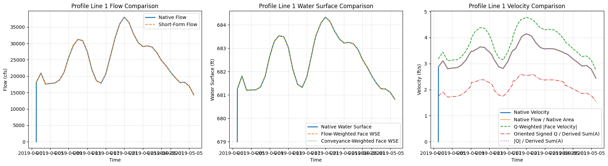
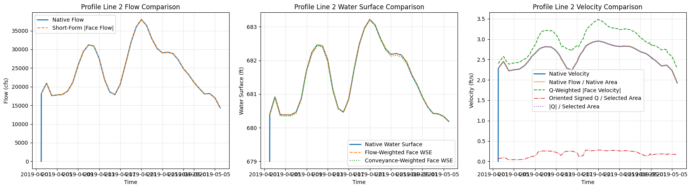
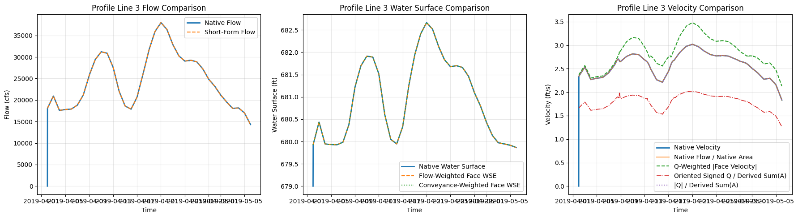
| time | profile_name | short_signed_flow_cfs | short_flow_cfs | short_area_sqft | short_area_source | station_fraction_min | station_fraction_max | station_fraction_clipped_count | short_derived_area_sqft | ... | face_area_output_abs_error_sqft | derived_area_error_sqft | derived_area_abs_error_sqft | wse_flow_weighted_error_ft | wse_conveyance_weighted_error_ft | velocity_q_weighted_error_fps | velocity_q_over_a_error_fps | signed_velocity_q_over_a_error_fps | oriented_velocity_q_over_a_error_fps | initialization_or_alignment_anomaly | |
|---|---|---|---|---|---|---|---|---|---|---|---|---|---|---|---|---|---|---|---|---|---|
| 0 | 2019-04-02 00:00:00 | Profile Line 1 | -11030.064664 | 18068.039569 | 6298.825738 | native_face_area_output | 0.997853 | 1.000011 | 1 | 2395.673104 | ... | 6298.825738 | 2395.673104 | 2395.673104 | 2.246168 | 2.244361 | 3.180515 | 2.868477 | -1.751130 | 1.751130 | True |
| 1 | 2019-04-02 00:30:00 | Profile Line 1 | -11065.144036 | 18122.529573 | 6306.569079 | native_face_area_output | 0.997853 | 1.000011 | 1 | 2398.048817 | ... | 0.000231 | -3908.520031 | 3908.520031 | 0.000034 | -0.001785 | 0.308507 | -0.003897 | -4.632035 | -1.122950 | False |
| 2 | 2019-04-02 01:00:00 | Profile Line 1 | -11102.971669 | 18182.092361 | 6315.489308 | native_face_area_output | 0.997853 | 1.000011 | 1 | 2400.803892 | ... | 0.000050 | -3914.685365 | 3914.685365 | 0.000014 | -0.001818 | 0.309128 | -0.003904 | -4.640926 | -1.124818 | False |
| 3 | 2019-04-02 01:30:00 | Profile Line 1 | -11140.645095 | 18241.130614 | 6324.717861 | native_face_area_output | 0.997853 | 1.000011 | 1 | 2403.663547 | ... | 0.000087 | -3921.054226 | 3921.054226 | -0.000014 | -0.001823 | 0.309673 | -0.003911 | -4.649459 | -1.126568 | False |
| 4 | 2019-04-02 02:00:00 | Profile Line 1 | -11178.516378 | 18300.434247 | 6334.132351 | native_face_area_output | 0.997853 | 1.000011 | 1 | 2406.573567 | ... | 0.000027 | -3927.558758 | 3927.558758 | -0.000023 | -0.001863 | 0.310212 | -0.003918 | -4.657902 | -1.128289 | False |
5 rows × 49 columns
Reference Lines vs Profile Lines - fidelity comparison¶
This final section compares solver-computed Reference Line output against post-processed Profile Line output from the new pythonnet/RasMapperLib API.
Reference lines are defined in geometry before computation, so HEC-RAS writes their flow, water surface, area, and bulk-velocity time series during the unsteady solve. Profile lines are drawn after computation and are sampled from the stored HDF results by RAS Mapper renderers.
The comparison below uses the same Chippewa_2D polylines as the earlier face-data examples. The prior notebook section adds those polylines as native reference lines and reruns plan 02; this section then creates a temporary GeoJSON copy with distinct Profile Line names so HdfResultsMesh.get_profile_line_flow_timeseries() exercises the ad-hoc RAS Mapper perimeter-face path instead of reading the native reference-line hydrograph by name.
Velocity is shown in two different forms because Reference Lines and Profile Lines do not expose the same velocity statistic. The apples-to-apples comparison uses bulk velocity defined as Flow / Area on both sides. The station plot shows the Profile Line velocity distribution only, which is information a Reference Line time series cannot provide.
# CLB-852 profile/reference-line comparison helpers
from ras_commander import HdfResultsQuery
from ras_commander.hdf import HdfResultsMesh, HdfResultsXsec
PROFILE_API_SAMPLE_SPACING_FT = 100.0
PROFILE_API_TIME_RANGE = None # None = all output timesteps; use (start, stop) for a shorter demo.
PROFILE_API_FLOW_DIRECTION = "signed"
comparison_profile_geojson_path = Path("data/profile_lines_chippewa2D.geojson")
comparison_profile_lines_gdf = gpd.read_file(comparison_profile_geojson_path)
comparison_profile_lines_gdf = comparison_profile_lines_gdf.set_crs(epsg=5070, allow_override=True)
comparison_profile_lines_gdf["profile_name"] = comparison_profile_lines_gdf["Name"].astype(str)
comparison_profile_lines_gdf["profile_api_name"] = comparison_profile_lines_gdf["profile_name"] + " Profile API"
if "native_reference_lines_ds" not in globals() or not native_reference_lines_ds.data_vars:
native_reference_lines_ds = HdfResultsXsec.get_ref_lines_timeseries(plan_hdf_path)
if not native_reference_lines_ds.data_vars:
raise ValueError("Reference-line output is unavailable. Run the Native Reference Line Comparison section first.")
native_reference_names = set(native_reference_lines_ds["refln_name"].values.astype(str))
comparison_profile_lines_gdf = comparison_profile_lines_gdf[
comparison_profile_lines_gdf["profile_name"].isin(native_reference_names)
].reset_index(drop=True)
if comparison_profile_lines_gdf.empty:
raise ValueError(
"None of the notebook profile lines have matching native reference-line results. "
"Run the previous section to add reference lines and recompute the plan."
)
project_output_path = Path(ras.project_folder)
profile_api_feature_path = project_output_path / "profile_line_api_comparison.geojson"
profile_api_lines_gdf = comparison_profile_lines_gdf[["profile_api_name", "profile_name", "geometry"]].rename(
columns={"profile_api_name": "Name"}
)
profile_api_lines_gdf.to_file(profile_api_feature_path, driver="GeoJSON")
print(f"Wrote temporary Profile Line feature file: {profile_api_feature_path}")
print(f"Comparing {len(comparison_profile_lines_gdf)} reference/profile line pair(s).")
def _native_reference_api_dataframe(reference_ds: xr.Dataset, profile_name: str) -> pd.DataFrame:
matches = np.where(reference_ds["refln_name"].values.astype(str) == profile_name)[0]
if len(matches) == 0:
raise ValueError(f"Reference line '{profile_name}' was not found in native results.")
profile_ds = reference_ds.isel(refln_id=int(matches[0]))
native_df = profile_ds.to_dataframe().reset_index()
native_df["time"] = pd.to_datetime(native_df["time"])
native_df["profile_name"] = profile_name
native_df = native_df.rename(columns={
"Flow": "native_flow_cfs",
"Water Surface": "native_wse_ft",
"Area": "native_area_sqft",
})
for column in ["native_flow_cfs", "native_wse_ft", "native_area_sqft"]:
if column not in native_df:
native_df[column] = np.nan
native_area = pd.to_numeric(native_df["native_area_sqft"], errors="coerce").to_numpy(dtype=float)
native_flow = pd.to_numeric(native_df["native_flow_cfs"], errors="coerce").to_numpy(dtype=float)
native_df["native_bulk_velocity_fps"] = np.divide(
native_flow,
native_area,
out=np.full(len(native_df), np.nan, dtype=float),
where=np.abs(native_area) > 0.0,
)
return native_df[[
"time",
"profile_name",
"native_flow_cfs",
"native_wse_ft",
"native_area_sqft",
"native_bulk_velocity_fps",
]]
def _station_average_timeseries(samples_df: pd.DataFrame, value_column: str, output_column: str) -> pd.DataFrame:
working = samples_df.copy()
working["time"] = pd.to_datetime(working["time"])
working[value_column] = pd.to_numeric(working[value_column], errors="coerce")
valid = working[np.isfinite(working[value_column])]
if valid.empty:
return pd.DataFrame(columns=["time_index", "time", output_column, f"{output_column}_sample_count"])
grouped = valid.groupby(["time_index", "time"], as_index=False).agg(
**{
output_column: (value_column, "mean"),
f"{output_column}_sample_count": (value_column, "count"),
}
)
return grouped.sort_values(["time_index", "time"]).reset_index(drop=True)
def _profile_flow_area_timeseries(flow_samples: pd.DataFrame) -> pd.DataFrame:
rows = []
working = flow_samples.copy()
working["time"] = pd.to_datetime(working["time"])
for (time_index, time_value), group in working.groupby(["time_index", "time"], sort=True):
ordered = group.sort_values("station")
station = pd.to_numeric(ordered["station"], errors="coerce").to_numpy(dtype=float)
depth = pd.to_numeric(ordered["depth"], errors="coerce").to_numpy(dtype=float)
flow = pd.to_numeric(ordered["flow"], errors="coerce").to_numpy(dtype=float)
valid_area = np.isfinite(station) & np.isfinite(depth)
area_sqft = np.nan
if valid_area.sum() >= 2:
area_sqft = float(np.trapezoid(np.maximum(depth[valid_area], 0.0), station[valid_area]))
representative_flow_cfs = float(np.nanmedian(flow)) if np.isfinite(flow).any() else np.nan
rows.append({
"time_index": int(time_index),
"time": pd.Timestamp(time_value),
"profile_flow_query_cfs": representative_flow_cfs,
"profile_cross_section_area_sqft": area_sqft,
"profile_cross_section_sample_count": int(valid_area.sum()),
})
return pd.DataFrame(rows)
def _velocity_samples_for_plot(samples_df: pd.DataFrame, profile_name: str) -> pd.DataFrame:
keep_columns = ["time_index", "time", "station", "velocity_mag", "depth"]
working = samples_df[keep_columns].copy()
working["time"] = pd.to_datetime(working["time"])
working["profile_name"] = profile_name
return working
def _datetime_values_to_epoch_seconds(values: pd.Series) -> np.ndarray:
datetimes = pd.to_datetime(values)
epoch_ns = datetimes.to_numpy(dtype="datetime64[ns]").astype("int64")
return epoch_ns.astype(float) / 1.0e9
def _interp_at_times(source_df: pd.DataFrame, value_column: str, target_times: pd.Series) -> np.ndarray:
source = source_df[["time", value_column]].dropna().copy()
if source.empty:
return np.full(len(target_times), np.nan, dtype=float)
source["time"] = pd.to_datetime(source["time"])
source = source.sort_values("time")
source_time = _datetime_values_to_epoch_seconds(source["time"])
source_values = source[value_column].to_numpy(dtype=float)
target_datetime = pd.to_datetime(target_times)
target_time = _datetime_values_to_epoch_seconds(pd.Series(target_datetime))
interpolated = np.interp(target_time, source_time, source_values, left=np.nan, right=np.nan)
interpolated[pd.isna(target_datetime).to_numpy()] = np.nan
return interpolated
def _mean_abs_relative_error(model: pd.Series, reference: pd.Series, min_reference: float = 1.0e-6) -> float:
model_values = pd.to_numeric(model, errors="coerce").to_numpy(dtype=float)
reference_values = pd.to_numeric(reference, errors="coerce").to_numpy(dtype=float)
valid = np.isfinite(model_values) & np.isfinite(reference_values) & (np.abs(reference_values) > min_reference)
if not valid.any():
return np.nan
return float(np.mean(np.abs((model_values[valid] - reference_values[valid]) / reference_values[valid])) * 100.0)
def _rms_difference(model: pd.Series, reference: pd.Series) -> float:
model_values = pd.to_numeric(model, errors="coerce").to_numpy(dtype=float)
reference_values = pd.to_numeric(reference, errors="coerce").to_numpy(dtype=float)
valid = np.isfinite(model_values) & np.isfinite(reference_values)
if not valid.any():
return np.nan
error = model_values[valid] - reference_values[valid]
return float(np.sqrt(np.mean(error * error)))
def _peak_time_and_value(df: pd.DataFrame, value_column: str) -> tuple[object, float]:
valid = df.dropna(subset=[value_column])
if valid.empty:
return pd.NaT, np.nan
idx = valid[value_column].idxmax()
return pd.Timestamp(valid.loc[idx, "time"]), float(valid.loc[idx, value_column])
def _minutes_between(left: object, right: object) -> float:
if pd.isna(left) or pd.isna(right):
return np.nan
return float((pd.Timestamp(right) - pd.Timestamp(left)).total_seconds() / 60.0)
def _orientation_normalize_profile_flow(profile_flow_df: pd.DataFrame, native_df: pd.DataFrame) -> tuple[pd.Series, float]:
native_at_profile = _interp_at_times(native_df, "native_flow_cfs", profile_flow_df["time"])
profile_values = pd.to_numeric(profile_flow_df["profile_flow_signed_raw_cfs"], errors="coerce").to_numpy(dtype=float)
valid = np.isfinite(profile_values) & np.isfinite(native_at_profile)
orientation_factor = 1.0
if valid.any() and np.nansum(profile_values[valid] * native_at_profile[valid]) < 0.0:
orientation_factor = -1.0
return profile_flow_df["profile_flow_signed_raw_cfs"] * orientation_factor, orientation_factor
def _build_profile_line_api_comparison(row: pd.Series) -> tuple[pd.DataFrame, pd.DataFrame, pd.DataFrame, pd.DataFrame]:
profile_name = str(row["profile_name"])
profile_api_name = str(row["profile_api_name"])
polyline = row.geometry
native_df = _native_reference_api_dataframe(native_reference_lines_ds, profile_name)
velocity_samples = HdfResultsQuery.query_polyline_velocity_timeseries(
plan_hdf_path,
polyline,
time_range=PROFILE_API_TIME_RANGE,
sample_spacing=PROFILE_API_SAMPLE_SPACING_FT,
ras_object=ras,
)
wse_samples = HdfResultsQuery.query_polyline_wse_timeseries(
plan_hdf_path,
polyline,
time_range=PROFILE_API_TIME_RANGE,
sample_spacing=PROFILE_API_SAMPLE_SPACING_FT,
ras_object=ras,
)
flow_renderer_samples = HdfResultsQuery.query_polyline_flow_timeseries(
plan_hdf_path,
polyline,
time_range=PROFILE_API_TIME_RANGE,
sample_spacing=PROFILE_API_SAMPLE_SPACING_FT,
ras_object=ras,
)
velocity_plot_df = _velocity_samples_for_plot(velocity_samples, profile_name)
wse_profile_df = _station_average_timeseries(wse_samples, "wse", "profile_wse_station_mean_ft")
flow_area_profile_df = _profile_flow_area_timeseries(flow_renderer_samples)
signed_flow_df = HdfResultsMesh.get_profile_line_flow_timeseries(
plan_hdf_path,
profile_api_name,
mesh_name=mesh_name,
profile_lines_path=profile_api_feature_path,
direction=PROFILE_API_FLOW_DIRECTION,
truncate=False,
ras_object=ras,
).rename(columns={"flow": "profile_flow_signed_raw_cfs"})
signed_flow_df["time"] = pd.to_datetime(signed_flow_df["time"])
absolute_flow_df = HdfResultsMesh.get_profile_line_flow_timeseries(
plan_hdf_path,
profile_api_name,
mesh_name=mesh_name,
profile_lines_path=profile_api_feature_path,
direction="absolute",
truncate=False,
ras_object=ras,
).rename(columns={"flow": "profile_flow_absolute_cfs"})
absolute_flow_df["time"] = pd.to_datetime(absolute_flow_df["time"])
profile_flow_df = signed_flow_df[[
"time",
"profile_flow_signed_raw_cfs",
"line_name",
"mesh_name",
"face_count",
"selection_source",
]].merge(
absolute_flow_df[["time", "profile_flow_absolute_cfs"]],
on="time",
how="left",
)
profile_flow_df["profile_flow_cfs"], orientation_factor = _orientation_normalize_profile_flow(
profile_flow_df,
native_df,
)
profile_df = profile_flow_df.merge(wse_profile_df.drop(columns=["time_index"], errors="ignore"), on="time", how="outer")
profile_df = profile_df.merge(flow_area_profile_df.drop(columns=["time_index"], errors="ignore"), on="time", how="outer")
profile_df = profile_df.sort_values("time").reset_index(drop=True)
profile_df["profile_name"] = profile_name
profile_df["profile_api_name"] = profile_api_name
profile_df["flow_orientation_factor"] = orientation_factor
profile_df["native_flow_at_profile_cfs"] = _interp_at_times(native_df, "native_flow_cfs", profile_df["time"])
profile_df["native_wse_at_profile_ft"] = _interp_at_times(native_df, "native_wse_ft", profile_df["time"])
profile_area = pd.to_numeric(profile_df["profile_cross_section_area_sqft"], errors="coerce").to_numpy(dtype=float)
native_flow_at_profile = pd.to_numeric(profile_df["native_flow_at_profile_cfs"], errors="coerce").to_numpy(dtype=float)
profile_flow_at_profile = pd.to_numeric(profile_df["profile_flow_cfs"], errors="coerce").to_numpy(dtype=float)
valid_profile_area = np.isfinite(profile_area) & (np.abs(profile_area) > 0.0)
profile_df["native_bulk_velocity_at_profile_fps"] = np.divide(
native_flow_at_profile,
profile_area,
out=np.full(len(profile_df), np.nan, dtype=float),
where=valid_profile_area,
)
profile_df["profile_bulk_velocity_fps"] = np.divide(
profile_flow_at_profile,
profile_area,
out=np.full(len(profile_df), np.nan, dtype=float),
where=valid_profile_area,
)
native_flow_peak_time, native_flow_peak = _peak_time_and_value(native_df, "native_flow_cfs")
profile_flow_peak_time, profile_flow_peak = _peak_time_and_value(profile_df, "profile_flow_cfs")
native_bulk_peak_time, native_bulk_peak = _peak_time_and_value(native_df, "native_bulk_velocity_fps")
profile_bulk_peak_time, profile_bulk_peak = _peak_time_and_value(profile_df, "profile_bulk_velocity_fps")
summary_rows = [
{
"profile_name": profile_name,
"quantity": "Flow",
"units": "cfs",
"comparison_stat": "peak",
"native_value": native_flow_peak,
"profile_value": profile_flow_peak,
"rms_difference": _rms_difference(profile_df["profile_flow_cfs"], profile_df["native_flow_at_profile_cfs"]),
"mean_abs_relative_error_percent": _mean_abs_relative_error(profile_df["profile_flow_cfs"], profile_df["native_flow_at_profile_cfs"]),
"time_of_peak_shift_min": _minutes_between(native_flow_peak_time, profile_flow_peak_time),
"profile_sample_count_median": np.nan,
"flow_face_count": profile_df["face_count"].dropna().iloc[0] if profile_df["face_count"].notna().any() else np.nan,
"flow_selection_source": profile_df["selection_source"].dropna().iloc[0] if profile_df["selection_source"].notna().any() else "",
"flow_orientation_factor": orientation_factor,
},
{
"profile_name": profile_name,
"quantity": "Water Surface",
"units": "ft NAVD88",
"comparison_stat": "mean",
"native_value": float(native_df["native_wse_ft"].mean(skipna=True)),
"profile_value": float(profile_df["profile_wse_station_mean_ft"].mean(skipna=True)),
"rms_difference": _rms_difference(profile_df["profile_wse_station_mean_ft"], profile_df["native_wse_at_profile_ft"]),
"mean_abs_relative_error_percent": _mean_abs_relative_error(profile_df["profile_wse_station_mean_ft"], profile_df["native_wse_at_profile_ft"]),
"time_of_peak_shift_min": np.nan,
"profile_sample_count_median": float(profile_df["profile_wse_station_mean_ft_sample_count"].median(skipna=True)),
"flow_face_count": np.nan,
"flow_selection_source": "",
"flow_orientation_factor": np.nan,
},
{
"profile_name": profile_name,
"quantity": "Bulk Velocity",
"units": "ft/s",
"comparison_stat": "peak",
"native_value": native_bulk_peak,
"profile_value": profile_bulk_peak,
"rms_difference": _rms_difference(profile_df["profile_bulk_velocity_fps"], profile_df["native_bulk_velocity_at_profile_fps"]),
"mean_abs_relative_error_percent": _mean_abs_relative_error(profile_df["profile_bulk_velocity_fps"], profile_df["native_bulk_velocity_at_profile_fps"]),
"time_of_peak_shift_min": _minutes_between(native_bulk_peak_time, profile_bulk_peak_time),
"profile_sample_count_median": float(profile_df["profile_cross_section_sample_count"].median(skipna=True)),
"flow_face_count": np.nan,
"flow_selection_source": "profile_flow_over_query_polyline_area",
"flow_orientation_factor": np.nan,
},
]
summary_df = pd.DataFrame(summary_rows)
return native_df, profile_df, summary_df, velocity_plot_df
native_api_series = []
profile_api_series = []
metric_summary_tables = []
velocity_profile_plot_tables = []
for _, profile_row in comparison_profile_lines_gdf.iterrows():
print(f"Processing {profile_row['profile_name']} -> {profile_row['profile_api_name']}")
native_line_df, profile_line_df, metric_line_df, velocity_plot_df = _build_profile_line_api_comparison(profile_row)
native_api_series.append(native_line_df)
profile_api_series.append(profile_line_df)
metric_summary_tables.append(metric_line_df)
velocity_profile_plot_tables.append(velocity_plot_df)
native_profile_line_api_series_df = pd.concat(native_api_series, ignore_index=True)
profile_line_api_comparison_df = pd.concat(profile_api_series, ignore_index=True)
profile_line_api_metric_summary_df = pd.concat(metric_summary_tables, ignore_index=True)
profile_line_api_velocity_samples_df = pd.concat(velocity_profile_plot_tables, ignore_index=True)
comparison_run_id = pd.Timestamp.now().strftime("%Y%m%d_%H%M%S")
profile_line_api_comparison_csv = project_output_path / f"profile_line_api_reference_comparison_{comparison_run_id}.csv"
profile_line_api_summary_csv = project_output_path / f"profile_line_api_reference_summary_{comparison_run_id}.csv"
profile_line_api_comparison_df.to_csv(profile_line_api_comparison_csv, index=False)
profile_line_api_metric_summary_df.to_csv(profile_line_api_summary_csv, index=False)
profile_line_api_comparison_df.to_csv(project_output_path / "profile_line_api_reference_comparison_latest.csv", index=False)
profile_line_api_metric_summary_df.to_csv(project_output_path / "profile_line_api_reference_summary_latest.csv", index=False)
profile_line_api_velocity_samples_df.to_csv(project_output_path / "profile_line_api_velocity_samples_latest.csv", index=False)
print(f"Saved profile/reference comparison to {profile_line_api_comparison_csv}")
print(f"Saved profile/reference summary to {profile_line_api_summary_csv}")
profile_line_api_metric_summary_df
2026-05-24 05:54:17 - pyogrio._io - INFO - Created 3 records
Wrote temporary Profile Line feature file: C:\GH\symphony-workspaces\ras-commander\CLB-852\examples\example_projects\Chippewa_2D_13\profile_line_api_comparison.geojson
Comparing 3 reference/profile line pair(s).
Processing Profile Line 1 -> Profile Line 1 Profile API
Processing Profile Line 2 -> Profile Line 2 Profile API
Processing Profile Line 3 -> Profile Line 3 Profile API
Saved profile/reference comparison to C:\GH\symphony-workspaces\ras-commander\CLB-852\examples\example_projects\Chippewa_2D_13\profile_line_api_reference_comparison_20260524_055447.csv
Saved profile/reference summary to C:\GH\symphony-workspaces\ras-commander\CLB-852\examples\example_projects\Chippewa_2D_13\profile_line_api_reference_summary_20260524_055447.csv
| profile_name | quantity | units | comparison_stat | native_value | profile_value | rms_difference | mean_abs_relative_error_percent | time_of_peak_shift_min | profile_sample_count_median | flow_face_count | flow_selection_source | flow_orientation_factor | |
|---|---|---|---|---|---|---|---|---|---|---|---|---|---|
| 0 | Profile Line 1 | Flow | cfs | peak | 37997.230469 | 38000.628204 | 447.780830 | 0.018540 | 0.0 | NaN | 16.0 | rasmapper_perimeter_faces | -1.0 |
| 1 | Profile Line 1 | Water Surface | ft NAVD88 | mean | 682.424988 | 682.581232 | 0.224390 | 0.023324 | NaN | 31.0 | NaN | NaN | |
| 2 | Profile Line 1 | Bulk Velocity | ft/s | peak | 4.143287 | 4.152660 | 0.073396 | 0.018540 | 0.0 | 31.0 | NaN | profile_flow_over_query_polyline_area | NaN |
| 3 | Profile Line 2 | Flow | cfs | peak | 37980.917969 | 38000.628204 | 448.536775 | 0.084429 | -30.0 | NaN | 50.0 | rasmapper_perimeter_faces | -1.0 |
| 4 | Profile Line 2 | Water Surface | ft NAVD88 | mean | 681.470764 | 681.481912 | 0.127870 | 0.013806 | NaN | 51.0 | NaN | NaN | |
| 5 | Profile Line 2 | Bulk Velocity | ft/s | peak | 2.956097 | 2.944164 | 0.050696 | 0.084429 | -30.0 | 51.0 | NaN | profile_flow_over_query_polyline_area | NaN |
| 6 | Profile Line 3 | Flow | cfs | peak | 37987.433594 | 38000.628204 | 449.531869 | 0.124932 | -30.0 | NaN | 65.0 | rasmapper_perimeter_faces | -1.0 |
| 7 | Profile Line 3 | Water Surface | ft NAVD88 | mean | 680.975281 | 681.045610 | 0.161275 | 0.013074 | NaN | 48.0 | NaN | NaN | |
| 8 | Profile Line 3 | Bulk Velocity | ft/s | peak | 3.020563 | 3.005746 | 0.059662 | 0.124932 | -30.0 | 48.0 | NaN | profile_flow_over_query_polyline_area | NaN |
# CLB-852 bulk-velocity and station-profile plots
import matplotlib.dates as mdates
comparison_profile_order = comparison_profile_lines_gdf["profile_name"].tolist()
color_reference = "#1f4e79"
color_profile = "#c04b37"
color_station = "#4b7f52"
def _scatter_peak(ax, time_value, value, color):
if not pd.isna(time_value) and np.isfinite(value):
ax.scatter([time_value], [value], color=color, s=30, zorder=3)
fig, axes = plt.subplots(
len(comparison_profile_order),
2,
figsize=(16, 4.8 * len(comparison_profile_order)),
)
if len(comparison_profile_order) == 1:
axes = np.array([axes])
for row_idx, profile_name in enumerate(comparison_profile_order):
native_plot_df = native_profile_line_api_series_df[
native_profile_line_api_series_df["profile_name"] == profile_name
].sort_values("time")
profile_plot_df = profile_line_api_comparison_df[
profile_line_api_comparison_df["profile_name"] == profile_name
].sort_values("time")
velocity_samples_plot_df = profile_line_api_velocity_samples_df[
profile_line_api_velocity_samples_df["profile_name"] == profile_name
].copy()
ax_bulk, ax_station = axes[row_idx]
ax_bulk.plot(
native_plot_df["time"],
native_plot_df["native_bulk_velocity_fps"],
color=color_reference,
linewidth=1.9,
label="Reference Line Q / sampled Profile Line area",
)
ax_bulk.plot(
profile_plot_df["time"],
profile_plot_df["profile_bulk_velocity_fps"],
color=color_profile,
linewidth=1.5,
linestyle="--",
label="Profile Line Q / same sampled area",
)
native_bulk_peak_time, native_bulk_peak = _peak_time_and_value(native_plot_df, "native_bulk_velocity_fps")
profile_bulk_peak_time, profile_bulk_peak = _peak_time_and_value(profile_plot_df, "profile_bulk_velocity_fps")
_scatter_peak(ax_bulk, native_bulk_peak_time, native_bulk_peak, color_reference)
_scatter_peak(ax_bulk, profile_bulk_peak_time, profile_bulk_peak, color_profile)
ax_bulk.set_title(f"{profile_name}: Bulk Velocity")
ax_bulk.set_xlabel("Simulation Time")
ax_bulk.set_ylabel("Bulk Velocity (ft/s)")
ax_bulk.grid(True, alpha=0.25)
ax_bulk.legend(loc="best", fontsize=8)
ax_bulk.xaxis.set_major_locator(mdates.DayLocator(interval=7))
ax_bulk.xaxis.set_major_formatter(mdates.DateFormatter("%b %d"))
plot_time = profile_bulk_peak_time if not pd.isna(profile_bulk_peak_time) else velocity_samples_plot_df["time"].iloc[0]
available_times = pd.DatetimeIndex(pd.to_datetime(velocity_samples_plot_df["time"].dropna().unique()))
nearest_time = available_times[np.argmin(np.abs(available_times - pd.Timestamp(plot_time)))]
station_profile = velocity_samples_plot_df[
pd.to_datetime(velocity_samples_plot_df["time"]) == nearest_time
].sort_values("station")
ax_station.plot(
station_profile["station"],
station_profile["velocity_mag"],
color=color_station,
linewidth=1.8,
marker="o",
markersize=3.5,
label="Profile Line velocity magnitude",
)
ax_station.set_title(f"{profile_name}: Profile Line Velocity at {nearest_time:%Y-%m-%d %H:%M}")
ax_station.set_xlabel("Profile Station (ft)")
ax_station.set_ylabel("Velocity Magnitude (ft/s)")
ax_station.grid(True, alpha=0.25)
ax_station.legend(loc="best", fontsize=8)
fig.suptitle(
"Chippewa_2D Profile Line Velocity: bulk Flow/Area comparison and per-station renderer output",
fontsize=14,
y=1.01,
)
fig.autofmt_xdate(rotation=30)
plt.tight_layout()
velocity_figure_path = project_output_path / "profile_line_api_bulk_velocity_and_station_profiles_latest.png"
fig.savefig(velocity_figure_path, dpi=220, bbox_inches="tight")
plt.show()
print(f"Saved bulk velocity/profile station figure to {velocity_figure_path}")
fig, axes = plt.subplots(1, 3, figsize=(17, 4.8))
for ax, quantity, ylabel in zip(
axes,
["Flow", "Water Surface", "Bulk Velocity"],
["RMS Difference (cfs)", "RMS Difference (ft)", "RMS Difference (ft/s)"],
):
quantity_df = profile_line_api_metric_summary_df[
profile_line_api_metric_summary_df["quantity"] == quantity
].set_index("profile_name").reindex(comparison_profile_order)
bars = ax.bar(quantity_df.index, quantity_df["rms_difference"], color=color_profile, alpha=0.82)
finite_rms = pd.to_numeric(quantity_df["rms_difference"], errors="coerce").dropna()
if not finite_rms.empty:
ax.set_ylim(top=float(finite_rms.max()) * 1.12)
ax.set_title(f"{quantity} RMS Difference")
ax.set_ylabel(ylabel)
ax.set_xlabel("Reference/Profile Line")
ax.grid(True, axis="y", alpha=0.25)
ax.tick_params(axis="x", rotation=25)
for bar, mare in zip(bars, quantity_df["mean_abs_relative_error_percent"]):
if np.isfinite(mare):
ax.text(
bar.get_x() + bar.get_width() / 2.0,
bar.get_height(),
f"{mare:.1f}% MARE",
ha="center",
va="bottom",
fontsize=8,
)
fig.suptitle("Profile Line fidelity metrics at Profile Line output timesteps", fontsize=14)
plt.tight_layout()
metrics_figure_path = project_output_path / "profile_line_api_reference_comparison_metrics_latest.png"
fig.savefig(metrics_figure_path, dpi=220, bbox_inches="tight")
plt.show()
print(f"Saved metric comparison figure to {metrics_figure_path}")
profile_line_api_metric_summary_df[[
"profile_name",
"quantity",
"comparison_stat",
"native_value",
"profile_value",
"units",
"rms_difference",
"mean_abs_relative_error_percent",
"time_of_peak_shift_min",
"profile_sample_count_median",
"flow_face_count",
"flow_selection_source",
"flow_orientation_factor",
]]
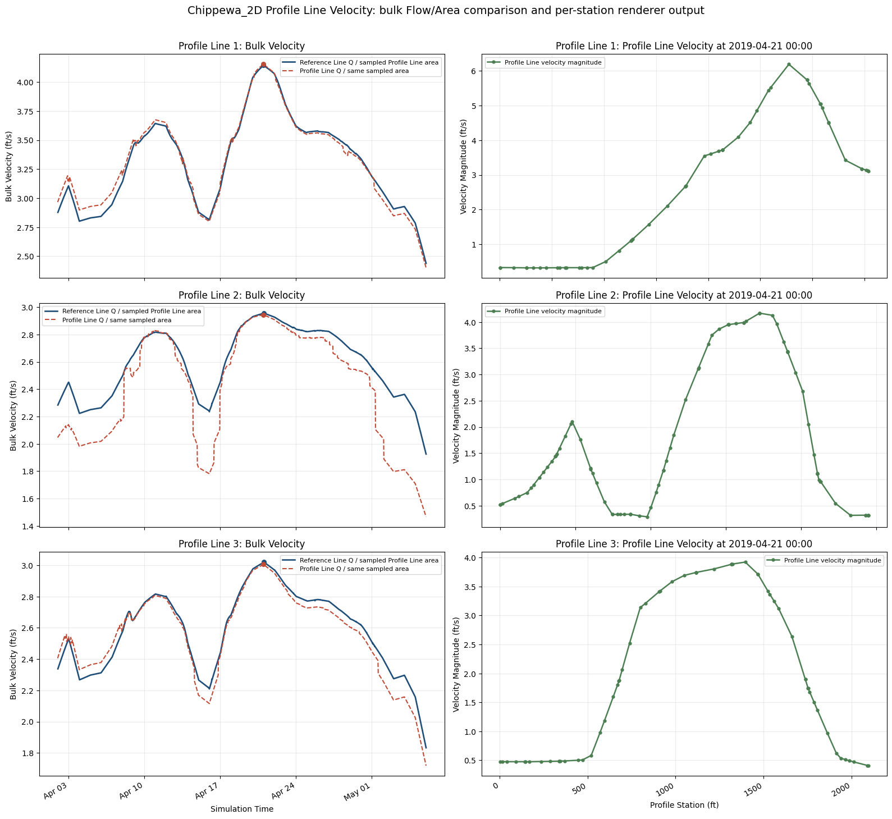
Saved bulk velocity/profile station figure to C:\GH\symphony-workspaces\ras-commander\CLB-852\examples\example_projects\Chippewa_2D_13\profile_line_api_bulk_velocity_and_station_profiles_latest.png
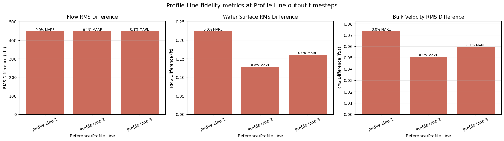
Saved metric comparison figure to C:\GH\symphony-workspaces\ras-commander\CLB-852\examples\example_projects\Chippewa_2D_13\profile_line_api_reference_comparison_metrics_latest.png
| profile_name | quantity | comparison_stat | native_value | profile_value | units | rms_difference | mean_abs_relative_error_percent | time_of_peak_shift_min | profile_sample_count_median | flow_face_count | flow_selection_source | flow_orientation_factor | |
|---|---|---|---|---|---|---|---|---|---|---|---|---|---|
| 0 | Profile Line 1 | Flow | peak | 37997.230469 | 38000.628204 | cfs | 447.780830 | 0.018540 | 0.0 | NaN | 16.0 | rasmapper_perimeter_faces | -1.0 |
| 1 | Profile Line 1 | Water Surface | mean | 682.424988 | 682.581232 | ft NAVD88 | 0.224390 | 0.023324 | NaN | 31.0 | NaN | NaN | |
| 2 | Profile Line 1 | Bulk Velocity | peak | 4.143287 | 4.152660 | ft/s | 0.073396 | 0.018540 | 0.0 | 31.0 | NaN | profile_flow_over_query_polyline_area | NaN |
| 3 | Profile Line 2 | Flow | peak | 37980.917969 | 38000.628204 | cfs | 448.536775 | 0.084429 | -30.0 | NaN | 50.0 | rasmapper_perimeter_faces | -1.0 |
| 4 | Profile Line 2 | Water Surface | mean | 681.470764 | 681.481912 | ft NAVD88 | 0.127870 | 0.013806 | NaN | 51.0 | NaN | NaN | |
| 5 | Profile Line 2 | Bulk Velocity | peak | 2.956097 | 2.944164 | ft/s | 0.050696 | 0.084429 | -30.0 | 51.0 | NaN | profile_flow_over_query_polyline_area | NaN |
| 6 | Profile Line 3 | Flow | peak | 37987.433594 | 38000.628204 | cfs | 449.531869 | 0.124932 | -30.0 | NaN | 65.0 | rasmapper_perimeter_faces | -1.0 |
| 7 | Profile Line 3 | Water Surface | mean | 680.975281 | 681.045610 | ft NAVD88 | 0.161275 | 0.013074 | NaN | 48.0 | NaN | NaN | |
| 8 | Profile Line 3 | Bulk Velocity | peak | 3.020563 | 3.005746 | ft/s | 0.059662 | 0.124932 | -30.0 | 48.0 | NaN | profile_flow_over_query_polyline_area | NaN |
Interpreting the Reference Line vs Profile Line comparison¶
Reference Line flow is the best accounting source because HEC-RAS computes it during the unsteady solve at the reference line. The Profile Line flow shown in the summary table is the post-processed ad-hoc RAS Mapper perimeter-face result from HdfResultsMesh.get_profile_line_flow_timeseries() using a distinct Profile Line feature name, with signed flow orientation-normalized to the native reference line for comparison.
Water surface is compared as a station-mean Profile Line renderer sample against the solver reference-line water-surface series. Bulk velocity is compared as Flow / Area on both sides using the same sampled Profile Line cross-section area from query_polyline_flow_timeseries(): Reference Line Q over sampled area versus Profile Line Q over sampled area.
The per-station velocity plot is Profile Line-only. It shows the detailed renderer output that a Reference Line time series cannot provide, so it is not reduced into a Reference Line error metric.